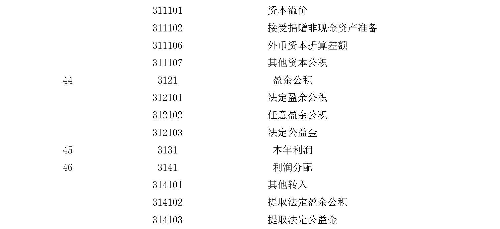
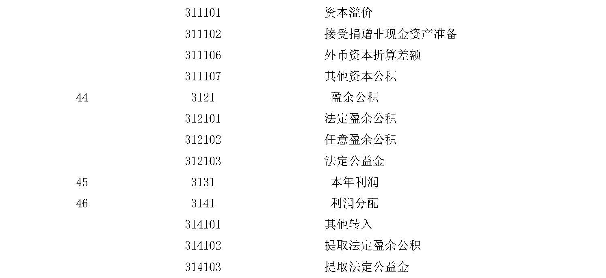

财政部
关于印发《小企业会计制度》的通知
财会〔2004〕2号
各省、自治区、直辖市、计划单列市财政厅（局），新疆生产建设兵团财务局，国务院有关部委、有关直属机构，有关中央管理企业：
为建立健全国家统一的会计制度，规范小企业的会计核算，现将《小企业会计制度》印发给你们，于2005年1月1日起在小企业范围内执行。执行中有何问题，请及时反馈我部。
附件：小企业会计制度
财政部
2004年4月27日
附件：
小企业会计制度
一、总说明
（一）为了规范小企业的会计核算，提高会计信息质量，根据《中华人民共和国会计法》、《企业财务会计报告条例》及其他有关法律和法规，制定本制度。
（二）本制度适用于在中华人民共和国境内设立的不对外筹集资金、经营规模较小的企业。
本制度中所称“不对外筹集资金、经营规模较小的企业”，是指不公开发行股票或债券，符合原国家经济贸易委员会、原国家发展计划委员会、财政部、国家统计局2003年制定的《中小企业标准暂行规定》（国经贸中小企〔2003〕143号）中界定的小企业，不包括以个人独资及合伙形式设立的小企业。
（三）符合本制度规定的小企业可以按照本制度进行核算，也可以选择执行《企业会计制度》。
1.按照本制度进行核算的小企业，不能在执行本制度的同时，选择执行《企业会计制度》的有关规定；选择执行《企业会计制度》的小企业，不能在执行《企业会计制度》的同时，选择执行本制度的有关规定。
2.集团公司内部母子公司分属不同规模的情况下，为统一会计政策及合并报表等目的，集团内小企业应执行《企业会计制度》。
3.按照本制度进行核算的小企业，如果需要公开发行股票或债券等，应转为执行《企业会计制度》；如果因经营规模的变化导致连续三年不符合小企业标准的，应转为执行《企业会计制度》。
（四）小企业可以根据有关会计法律、法规和本制度的规定，在不违反本制度规定的前提下，结合本企业的实际情况，制定适合于本企业的具体会计核算办法。
（五）小企业应当根据会计业务的需要设置会计机构，或者在有关机构中设置会计人员并指定会计主管人员；不具备设置条件的，应当委托经批准设立从事会计代理记账业务的中介机构代理记账。
（六）小企业填制会计凭证、登记会计账簿、管理会计档案等，应按照《会计基础工作规范》和《会计档案管理办法》的规定执行。
（七）小企业的会计核算应当以持续、正常的生产经营活动为前提。会计核算应当划分会计期间，分期结算账目，会计期末编制财务会计报告。
本制度所称的会计期间分为年度和月度，年度和月度均按公历起讫日期确定。会计期末，是指月末和年末。
（八）小企业的会计核算以人民币为记账本位币。
业务收支以人民币以外的货币为主的小企业，可以选定其中一种货币作为记账本位币，但编报的财务会计报告应当折算为人民币。
小企业发生外币业务时，应当将有关外币金额折合为记账本位币金额记账。除另有规定外，所有与外币业务有关的账户，应当采用业务发生时的汇率或业务发生当期期初的汇率折合。
期末，小企业的各种外币账户的外币余额应当按照期末汇率折合为记账本位币。
（九）小企业的会计记账采用借贷记账法。
（十）小企业会计记录的文字应当使用中文。在民族自治地方，会计记录可以同时使用当地通用的一种民族文字。
（十一）小企业在会计核算时，应当遵循以下基本原则：
1.小企业的会计核算应当以实际发生的交易或事项为依据，如实反映其财务状况和经营成果。
2.小企业应当按照交易或事项的经济实质进行会计核算，而不应仅以法律形式作为会计核算的依据。
3.小企业提供的会计信息应当能够满足会计信息使用者的需要。
4.小企业的会计核算方法前后各期应当保持一致，不得随意变更。如有必要变更，应将变更的内容和理由、变更的累积影响数，或累积影响数不能合理确定的理由等，在会计报表附注中予以说明。
5.小企业的会计核算应当按照规定的会计处理方法进行，会计指标应当口径一致、相互可比。
6.小企业的会计核算应当及时进行，不得提前或延后。
7.小企业的会计核算和编制的财务会计报告应当清晰明了，便于理解和运用。
8.小企业的会计核算应当以权责发生制为基础。凡在当期已经实现的收入和已经发生或应当负担的费用，不论款项是否收付，都应作为当期的收入和费用；凡是不属于当期的收入和费用，即使款项已在当期收付，也不应作为当期的收入和费用。
9.小企业在进行会计核算时，收入与其成本、费用应当相互配比，同一会计期间内的各项收入与其相关的成本、费用，应当在该会计期间内确认。
10.小企业的各项资产在取得时应当按照实际成本计量。其后，各项资产账面价值的调整，应按照本制度的规定执行。除法律、法规和国家统一会计制度另有规定外，企业不得自行调整其账面价值。
11.小企业的会计核算应当合理划分收益性支出与资本性支出的界限。凡支出的效益仅及于本年度（或一个营业周期）的，应当作为收益性支出；凡支出的效益及于几个会计年度（或几个营业周期）的，应当作为资本性支出。
12.小企业在进行会计核算时，应当遵循谨慎性原则。
13.小企业的会计核算应当遵循重要性原则，在会计核算过程中对交易或事项应当区别其重要性程度，采用不同的核算方法。
（十二）小企业如发生非货币性交易，应按以下原则处理：
1.以换出资产的账面价值，加上应支付的相关税费，作为换入资产的入账价值。
2.非货币性交易中如果发生补价，应区别不同情况处理：
（1）支付补价的小企业，应以换出资产的账面价值加上补价和应支付的相关税费，作为换入资产的入账价值。
（2）收到补价的小企业，应按以下公式确定换入资产的入账价值和应确认的损益：
换入资产入账价值=换出资产账面价值-(补价÷换出资产公允价值)×换出资产账面价值-(补价÷换出资产公允价值)×应交的税金及教育费附加+应支付的相关税费
应确认的损益=补价×[1-(换出资产账面价值+应交的税金及教育费附加)÷换出资产公允价值]
3.在非货币性交易中，如果同时换入多项资产，应按换入各项资产的公允价值占换入资产公允价值总额的比例，对换出资产的账面价值总额和应支付的相关税费等进行分配，以确定各项换入资产的入账价值。
（十三）小企业如发生债务重组事项，应按以下规定处理：
1.以低于债务账面价值的现金清偿某项债务的，债务人应将重组债务的账面价值与支付的现金之间的差额，确认为资本公积；债权人应将重组债权的账面价值与收到的现金之间的差额，确认为当期损失。
2.以非现金资产清偿债务的，债务人应将重组债务的账面价值与转让的非现金资产账面价值和相关税费之和的差额，确认为资本公积或当期损失；债权人应将重组债权的账面价值作为受让的非现金资产的入账价值。
如果债务人以多项非现金资产清偿债务的，债权人应按取得的各项非现金资产的公允价值占非现金资产公允价值总额的比例，对重组应收债权的账面价值和应支付的相关税费之和进行分配，按分配后的价值作为各项非现金资产的入账价值。
3.以债务转为资本的，债务人应将重组债务的账面价值与债权人因放弃债权而享有的股权的账面价值之间的差额确认为资本公积；债权人应将重组债权的账面价值作为受让的股权的入账价值。
4.以修改其他债务条件进行债务重组的，应分别情况处理：
（1）作为债务人，如果重组债务的账面价值大于将来应付金额，应将重组债务的账面价值减记至将来应付金额，减记的金额确认为资本公积；如果重组债务的账面价值等于或小于将来应付金额，则不作账务处理。
（2）作为债权人，如果重组债权的账面价值大于将来应收金额，应将重组债权的账面价值减记至将来应收金额，减记的金额确认为当期损失；如果重组债权的账面余额等于或小于将来应收金额，则不作账务处理。
（十四）本制度中所称的账面余额，是指某科目的账面实际余额，不扣除作为该科目的备抵项目（如坏账准备等）；账面价值，是指某科目的账面余额减去相关的备抵项目后的金额。
（十五）小企业应按本制度的规定，设置和使用会计科目：
1.在不影响对外提供统一财务会计报告的前提下，可以根据实际情况自行增设或减少某些会计科目。
2.明细科目的设置，除本制度已有规定外，在不违反本制度统一要求的前提下，可以根据需要自行确定。
3.本制度统一规定会计科目的编号，以便于编制会计凭证，登记账簿，查阅账目，实行会计电算化。企业不应随意打乱重编。某些会计科目之间留有空号，供增设会计科目之用。
（十六）小企业年度财务会计报告，除应当包括本制度规定的基本会计报表外，还应提供会计报表附注的内容。本制度中规定的基本会计报表是指资产负债表和利润表。企业也可以根据需要编制现金流量表。
小企业应按照本制度规定，对外提供真实、完整的财务会计报告。企业不得违反规定，随意改变财务会计报告的编制基础、编制依据、编制原则和方法，不得随意改变本制度规定的财务会计报告有关数据的会计口径。
（十七）执行本制度的小企业，转为执行《企业会计制度》时，应按会计政策及其变更的相关规定进行处理。
二、会计科目名称和编号
 

|
附注：
小企业可以根据实际需要，对上述科目作必要的增减或合并：
1.采用计划成本进行材料日常核算的小企业，可以增设“物资采购”和“材料成本差异”科目。
2.预收款项和预付款项较多的小企业，可设置“预收账款”和“预付账款”科目。
3.低值易耗品较少的小企业，可以将其并入“材料”科目。
4.小企业内部各部门周转使用的备用金，可以增设“备用金”科目。
5.小企业接受其他单位委托代销商品，可以增设“受托代销商品”、“代销商品款”科目。
6.小企业根据自身的规模和管理等要求，可以将“生产成本”、“制造费用”科目合并为“生产费用”科目，并设置相关的明细科目。
7.对外提供劳务较多的小企业，可以增设“劳务成本”科目核算所提供劳务的成本。 |
三、会计科目使用说明
（一）资产类科目
1001 现金
一、本科目核算小企业的库存现金。
二、小企业应当严格按照国家有关现金管理的规定收支现金，并按照本制度规定核算各项现金收支业务。
三、现金收支的账务处理：
（一）从银行提取现金，根据支票存根记载的提取金额，借记本科目，贷记“银行存款”科目；将现金存入银行，根据银行退回给收款单位的收款凭证联，借记“银行存款”科目，贷记本科目。
（二）因支付职工出差费用等原因所需的现金，按支出凭证所记载的金额，借记“其他应收款”等科目，贷记本科目；收到出差人员交回的差旅费剩余款并结算时，按实际收回的现金，借记本科目，按应报销的金额，借记“管理费用”等科目，按实际借出的现金，贷记“其他应收款”科目。
（三）因其他原因收到现金，借记本科目，贷记有关科目；支出现金，借记有关科目，贷记本科目。
四、小企业应当设置“现金日记账”，由出纳人员根据收付款凭证，按照业务发生顺序逐笔登记。每日终了，应当计算当日的现金收入合计数、现金支出合计数和账面余额，并将账面余额与实际库存数核对，做到账款相符。
有外币现金的小企业，应当分别人民币和各种外币设置“现金日记账”进行明细核算。
五、每日终了结算现金收支、财产清查等发现的现金短缺或溢余，应当计入当期损益：如为现金短缺，属于应由责任人赔偿的部分，借记“其他应收款”或“现金”等科目，按实际短缺的金额扣除应由责任人赔偿的部分后的金额，借记“管理费用”科目，贷记本科目；如为现金溢余，应按实际溢余的金额，借记本科目，属于应支付给有关人员或单位的，贷记“其他应付款”科目，现金溢余金额超过应付给有关单位或人员的部分，贷记“营业外收入”科目。
六、本科目期末借方余额，反映小企业实际持有的库存现金。
1002 银行存款
一、本科目核算小企业存入银行的各种存款。企业如有存入其他金融机构的存款，也在本科目核算。
小企业的外埠存款、银行本票存款、银行汇票存款等在“其他货币资金”科目核算，不在本科目核算。
二、小企业应当严格按照国家有关支付结算办法，办理银行存款收支业务的结算，并按照本制度规定进行核算。
三、小企业将款项存入银行或其他金融机构时，借记本科目，贷记“现金”等有关科目；提取和支出存款时，借记“现金”等有关科目，贷记本科目。
四、银行存款的收款凭证和付款凭证的填制日期和依据：
（一）采用银行汇票方式。收款单位应当将汇票、解讫通知和进账单送交银行，根据银行退回的进账单和有关的原始凭证编制收款凭证；付款单位应在收到银行签发的银行汇票后，根据“银行汇票申请书（存根联）”编制付款凭证。如有多余款项或因汇票超过付款期等原因而退款时，应根据银行的多余款收账通知编制收款凭证。
（二）采用商业汇票方式。
1.采用商业承兑汇票方式。收款单位将要到期的商业承兑汇票连同填制的邮划或电划委托收款凭证，一并送交银行办理转账，根据银行盖章退回的收账通知，据以编制收款凭证；付款单位在收到银行的付款通知时，据以编制付款凭证。
2.采用银行承兑汇票方式。收款单位将要到期的银行承兑汇票连同填制的邮划或电划委托收款凭证，一并送交银行办理转账，根据银行的收账通知，据以编制收款凭证；付款单位在收到银行的付款通知时，据以编制付款凭证。
收款单位将未到期的商业汇票向银行申请贴现时，应按规定填制贴现凭证，连同汇票一并送交银行，根据银行的收账通知，据以编制收款凭证。
（三）采用银行本票方式。收款单位按规定受理银行本票后，应将本票连同进账单送交银行办理转账，根据银行盖章退回给收款单位的收款凭证联和有关原始凭证编制收款凭证；付款单位在填送“银行本票申请书”并将款项交存银行，收到银行签发的银行本票后，根据申请书存根联编制付款凭证。因银行本票超过付款期限或其他原因要求退款时，在交回本票和填制的进账单经银行审核盖章后，根据银行退回给收款单位的收款凭证联编制收款凭证。
（四）采用支票方式。收款单位对于收到的支票，应填制进账单连同支票送交银行，根据银行盖章退回给收款单位的收款凭证联和有关的原始凭证编制收款凭证，或根据银行转来由签发人送交银行的支票后，经银行审查盖章的收款凭证联和有关的原始凭证编制收款凭证；付款单位对于付出的支票，应根据支票存根和有关原始凭证编制付款凭证。
（五）采用汇兑结算方式。收款单位对于汇入的款项，应在收到银行的收账通知时，据以编制收款凭证；付款单位对于汇出的款项，应在向银行办理汇款后，根据汇款回单编制付款凭证。
（六）采用委托收款结算方式。收款单位对于托收款项，根据银行的收账通知，据以编制收款凭证；付款单位在收到银行转来的委托收款凭证后，根据委托收款凭证的付款通知和有关的原始凭证，编制付款凭证。如在付款期满前提前付款，应于通知银行付款之日，编制付款凭证。如拒绝付款的，不作账务处理。
（七）采用托收承付结算方式。收款单位对于托收款项，根据银行的收账通知和有关的原始凭证，据以编制收款凭证；付款单位对于承付的款项，应于承付时根据托收承付结算凭证的承付支款通知和有关发票账单等原始凭证，据以编制付款凭证。如拒绝付款，属于全部拒付的，不作账务处理；属于部分拒付的，付款部分按上述规定处理，拒付部分不作账务处理。
（八）以现金存入银行，应根据银行盖章退回的交款回单及时编制现金付款凭证，据以登记“现金日记账”和“银行存款日记账”。向银行提取现金，根据支票存根编制银行存款付款凭证，据以登记“银行存款日记账”和“现金日记账”。
（九）发生的存款利息，根据银行通知及时编制收款凭证，借记本科目，贷记“财务费用”科目；如为购建固定资产的专门借款发生的存款利息，在所购建的固定资产达到预定可使用状态之前，应冲减在建工程成本，借记本科目，贷记“在建工程”科目。
五、小企业应按开户银行和其他金融机构、存款种类等，分别设置“银行存款日记账”，由出纳人员根据收付款凭证，按照业务的发生顺序逐笔登记，每日终了应结出余额。
“银行存款日记账”应定期与“银行对账单”核对。月度终了，小企业银行存款账面余额与银行对账单余额之间如有差额，必须逐笔查明原因，并按月编制“银行存款余额调节表”调节相符。
六、有外币存款的小企业，应分别人民币和各种外币设置“银行存款日记账”进行明细核算。
小企业发生外币业务时，应将有关外币金额折合为记账本位币记账。除另有规定外，所有与外币业务有关的账户，应采用业务发生时的汇率，也可以采用业务发生当期期初的汇率折合。
期末，各种外币账户（包括外币现金、外币银行存款、以外币结算的债权和债务等）的外币余额，应当按照期末汇率折合为记账本位币。按照期末汇率折合的记账本位币金额与原账面记账本位币金额之间的差额作为汇兑损益，分别情况处理：
（一）筹建期间发生的汇兑损益，计入长期待摊费用；
（二）与购建固定资产有关的外币专门借款的汇兑损益，在满足借款费用资本化条件时至固定资产达到预定可使用状态之前的期间内发生的，计入所购建固定资产成本；
（三）除上述情况外，汇兑损益均计入当期财务费用。
七、本科目期末借方余额，反映小企业实际存在银行或其他金融机构的款项。
1009 其他货币资金
一、本科目核算小企业的外埠存款、银行汇票存款、银行本票存款、信用卡存款、信用证保证金存款、存出投资款等各种其他货币资金。
二、外埠存款，是指小企业到外地进行临时或零星采购时，汇往采购地银行开立采购专户的款项。企业将款项委托当地银行汇往采购地开立专户时，借记本科目，贷记“银行存款”科目。收到采购员交来供应单位发票账单等报销凭证时，借记“在途物资”、“材料”、“库存商品”、“应交税金——应交增值税（进项税额）”等科目，贷记本科目。将多余的外埠存款转回当地银行时，根据银行的收账通知，借记“银行存款”科目，贷记本科目。
三、银行汇票存款，是指小企业为取得银行汇票按规定存入银行的款项。企业在填送“银行汇票申请书”并将款项交存银行，取得银行汇票后，根据银行盖章退回的申请书存根联，借记本科目，贷记“银行存款”科目。企业使用银行汇票后，根据发票账单等有关凭证，借记“在途物资”、“材料”、“库存商品”、“应交税金——应交增值税（进项税额）”等科目，贷记本科目；如有多余款或因汇票超过付款期等原因而退回款项，根据开户行转来的银行汇票第四联（多余款收账通知），借记“银行存款”科目，贷记本科目。
四、银行本票存款，是指小企业为取得银行本票按规定存入银行的款项。企业向银行提交“银行本票申请书”并将款项交存银行，取得银行本票后，根据银行盖章退回的申请书存根联，借记本科目，贷记“银行存款”科目。企业使用银行本票后，根据发票账单等有关凭证，借记“在途物资”、“材料”、“库存商品”、“应交税金——应交增值税（进项税额）”等科目，贷记本科目。因本票超过付款期等原因而要求退款时，应当填制进账单一式两联，连同本票一并送交银行，根据银行盖章退回的进账单第一联，借记“银行存款”科目，贷记本科目。
五、信用卡存款，是指小企业为取得信用卡按照规定存入银行的款项。企业应按规定填制申请表，连同支票和有关资料一并送交发卡银行，根据银行盖章退回的进账单第一联，借记本科目，贷记“银行存款”科目。企业用信用卡购物或支付有关费用，借记有关科目，贷记本科目。企业信用卡在使用过程中，需向其账户续存资金的，借记本科目，贷记“银行存款”科目。
六、信用证保证金存款，是指小企业为取得信用证按规定存入银行的保证金。企业向银行交纳保证金，根据银行退回的进账单第一联，借记本科目，贷记“银行存款”科目。根据开证行交来的信用证来单通知书及有关单据列明的金额，借记“库存商品”、“应交税金——应交增值税（进项税额）”等科目，贷记本科目和“银行存款”科目。
七、存出投资款，是指小企业存入证券公司但尚未进行投资的资金。企业向证券公司划出资金时，应按实际划出的金额，借记本科目，贷记“银行存款”科目；购买股票、债券等时，按实际发生的金额，借记“短期投资”等科目，贷记本科目。
八、本科目应设置“外埠存款”、“银行汇票存款”、“银行本票存款”、“信用卡存款”、“信用证保证金存款”、“存出投资款”等明细科目，并按外埠存款的开户银行、银行汇票或本票的收款单位等设置明细账。
九、小企业应加强对其他货币资金的管理，及时办理结算，对于逾期尚未办理结算的银行汇票、银行本票等，应按规定及时转回，借记“银行存款”科目，贷记本科目。
十、本科目期末借方余额，反映小企业实际持有的其他货币资金。
1101 短期投资
一、本科目核算小企业购入能随时变现并且持有时间不准备超过1年（含1年）的投资，包括各种股票、债券、基金等。
购入不能随时变现或不准备随时变现的投资，在“长期股权投资”、“长期债权投资”科目核算，不在本科目核算。
二、短期投资应当按照取得时的实际成本入账。实际成本是指取得各种股票、债券时实际支付的价款。购入的各种股票、债券、基金等，实际支付的价款中包含已宣告但尚未领取的现金股利或已到付息期但尚未领取的债券利息，应单独核算，不构成实际成本。短期投资的实际成本按以下方法确定：
（一）以现金购入的短期投资，按实际支付的全部价款，包括税金、手续费等相关费用，扣除已宣告但尚未领取的现金股利或已到付息期但尚未领取的债券利息后的金额，作为实际成本。
（二）投资者投入的短期投资，按投资各方确认的价值作为短期投资的实际成本。
三、短期投资持有期间所收到的股利、利息等，不确认投资收益，作为冲减投资成本处理。出售短期投资所获得的价款，减去短期投资的账面价值以及尚未收到的已记入“应收股息”科目的股利、利息等后的余额，作为投资收益或损失，计入当期损益。
四、短期投资的账务处理：
（一）购入的各种股票、债券等作为短期投资的，按照实际支付的价款，借记本科目，贷记“银行存款”、“其他货币资金”等科目。如实际支付的价款中包含已宣告但尚未领取的现金股利，或已到付息期但尚未领取的债券利息，应单独核算。企业应按照实际支付的价款减去已宣告但尚未领取的现金股利，或已到付息期但尚未领取的债券利息后的金额，借记本科目，按应领取的现金股利、利息等，借记“应收股息”科目，按实际支付的价款，贷记“银行存款”、“其他货币资金”等科目。
（二）投资者投入的短期投资，按照投资各方确认的价值，借记本科目，贷记“实收资本”等科目。
（三）收到被投资单位发放的现金股利或利息等时，借记“银行存款”等科目，贷记本科目。企业持有股票期间所获得的股票股利，不作账务处理，但应在备查簿中登记所增加的股份。
（四）出售股票、债券或到期收回债券本息，按实际收到的金额，借记“银行存款”科目，按出售或收回短期投资的成本，贷记本科目，按未领取的现金股利、利息，贷记“应收股息”科目，按其差额，借记或贷记“投资收益”科目。
五、小企业应在期末时，对短期投资按成本与市价孰低计量。短期投资的总市价低于总成本的差额，应计提短期投资跌价准备，计入当期损益。
六、本科目应按短期投资种类设置明细账，进行明细核算。
七、本科目期末借方余额，反映小企业持有的各种短期投资的实际成本。
1102 短期投资跌价准备
一、本科目核算小企业提取的短期投资跌价准备。
二、小企业应定期或至少于每年年度终了，对短期投资进行全面检查，并根据谨慎性原则的要求，合理地预计持有的短期投资可能发生的损失。
短期投资应按照总成本与总市价孰低计量，当总市价低于总成本时，应当计提短期投资跌价准备。
三、会计期末，小企业应将持有的短期投资的总市价与其总成本进行比较，如总市价低于总成本的，按其差额，借记“投资收益”科目，贷记本科目；如已计提跌价准备的短期投资，其市价以后又恢复，应在已计提的跌价准备的范围内转回，借记本科目，贷记“投资收益”科目。
短期投资跌价准备可按以下公式计算：
当期应提取的短期投资跌价准备=当期短期投资总市价低于总成本的金额-本科目的贷方余额
当期短期投资总市价低于总成本的金额大于本科目的贷方余额，应按其差额提取跌价准备；如果当期短期投资总市价低于总成本的金额小于本科目的贷方余额，按其差额冲减已计提的跌价准备；如果当期短期投资总市价高于总成本，应将本科目的余额全部冲回。
四、出售短期投资时，按出售价款，借记“银行存款”等科目，按短期投资的账面余额，贷记“短期投资”科目，差额部分借记或贷记“投资收益”科目。除债务重组和非货币性交易等以外，出售的短期投资已计提的短期投资跌价准备可在期末一并调整。
五、本科目期末贷方余额，反映小企业已计提的短期投资跌价准备。
1111 应收票据
一、本科目核算小企业因销售商品、产品、提供劳务等而收到的商业汇票，包括银行承兑汇票和商业承兑汇票。
二、小企业应在收到开出、承兑的商业汇票时，按应收票据的票面价值入账。带息应收票据，应在期末计提利息，计提的利息增加应收票据的账面余额。
三、应收票据的账务处理：
（一）小企业因销售商品、产品、提供劳务等而收到开出、承兑的商业汇票，按应收票据的面值，借记本科目，按实现的营业收入，贷记“主营业务收入”等科目，按专用发票上注明的增值税额，贷记“应交税金——应交增值税（销项税额）”科目。
（二）小企业收到应收票据以抵偿应收账款时，按应收票据面值，借记本科目，贷记“应收账款”科目。
如为带息应收票据，应于期末时，按应收票据的票面价值和确定的利率计提利息，计提的利息增加应收票据的账面余额，借记本科目，贷记“财务费用”科目。
（三）小企业持未到期的应收票据向银行贴现，应根据银行盖章退回的贴现凭证第四联收账通知，按实际收到的金额（即减去贴现息后的净额），借记“银行存款”科目，按贴现息部分，借记“财务费用”科目，按应收票据的票面余额，贷记本科目。如为带息应收票据，按实际收到的金额，借记“银行存款”科目，按应收票据的账面余额，贷记本科目，按其差额，借记或贷记“财务费用”科目。
贴现的商业承兑汇票到期，因承兑人的银行账户余额不足支付，申请贴现的企业收到银行退回的应收票据、支款通知和拒绝付款理由书或付款人未付票款通知书时，按所付本息，借记“应收账款”科目，贷记“银行存款”科目；如果申请贴现企业的银行存款账户余额不足，银行作逾期贷款处理时，应按转作贷款的本息，借记“应收账款”科目，贷记“短期借款”科目。
（四）小企业将持有的应收票据背书转让取得所需物资时，按应计入取得物资成本的价值，借记“材料”、“库存商品”等科目，按专用发票上注明的增值税额，借记“应交税金——应交增值税（进项税额）”科目，按应收票据的账面余额，贷记本科目，按实际收到或支付的金额，借记或贷记“银行存款”等科目。
如为带息应收票据，将持有的应收票据背书转让取得所需物资时，按应计入取得物资成本的价值，借记“材料”、“库存商品”等科目，按专用发票上注明的增值税额，借记“应交税金——应交增值税（进项税额）”科目，按应收票据的账面余额，贷记本科目，按尚未计提的利息，贷记“财务费用”科目，按实际收到或支付的金额，借记或贷记“银行存款”等科目。
（五）应收票据到期，应分别情况处理：
1.收回应收票据，按实际收到的金额，借记“银行存款”科目，按应收票据的账面余额，贷记本科目，按其差额，贷记“财务费用”科目。
2.因付款人无力支付票款，收到银行退回的商业承兑汇票、委托收款凭证、未付票款通知书或拒绝付款证明等，按应收票据的账面余额，借记“应收账款”科目，贷记本科目。
3.到期不能收回的带息应收票据，转入“应收账款”科目核算后，期末不再计提利息，其应计提的利息，在有关备查簿中进行登记，待实际收到时冲减收到当期的财务费用。
四、小企业应当设置“应收票据备查簿”，逐笔登记每一应收票据的种类、号数和出票日期、票面金额、票面利率、交易合同号和付款人、承兑人、背书人的姓名或单位名称、到期日、背书转让日、贴现日期、贴现率和贴现净额、未计提的利息，以及收款日期和收回金额、退票情况等资料，应收票据到期结清票款或退票后，应当在备查簿内逐笔注销。
五、小企业持有的应收票据不得计提坏账准备，待到期不能收回转入应收账款后，再按规定计提坏账准备。但是，如有确凿证据表明企业持有的未到期应收票据不能够收回或收回的可能性不大时，应将其账面余额转入应收账款，并计提相应的坏账准备。
六、本科目期末借方余额，反映小企业持有的商业汇票的票面价值和应计利息。
1121 应收股息
一、本科目核算小企业因进行股权投资应收取的现金股利及进行债权投资应收取的利息。企业应收被投资单位的利润，以及购入股权投资时包含的已经宣告但尚未发放的现金股利和购入的债券投资中包含的已到付息期但尚未领取的债券利息，也在本科目核算。
购入到期还本付息的长期债券应收的利息，在“长期债权投资”科目核算，不在本科目核算。
二、小企业购入股票，如实际支付的价款中包含已宣告但尚未领取的现金股利，按实际成本（即实际支付的价款减去已宣告但尚未领取的现金股利），借记“短期投资”、“长期股权投资”科目，按应领取的现金股利，借记本科目，按实际支付的价款，贷记“银行存款”科目。
小企业购入的债券，如实际支付的价款中包含已到付息期但尚未领取的债券利息，按实际成本（即实际支付的价款减去已到付息期但尚未领取的利息），借记“短期投资”、“长期债权投资”科目，按应收取的利息，借记本科目，按实际支付的价款，贷记“银行存款”科目。
收到发放的现金股利或利息时，借记“银行存款”科目，贷记本科目。
三、小企业对外进行长期股权投资应分得的现金股利或利润，应于被投资单位宣告发放现金股利或分派利润时，借记本科目，贷记“投资收益”或“长期股权投资”等科目。收到的现金股利或利润，借记“银行存款”科目，贷记本科目。
小企业购入分期付息、到期还本的债券，以及取得的分期付息的其他长期债权投资，已到付息期而应收未收的利息，应于确认投资收益时，按应取得的利息，借记本科目，贷记“投资收益”科目。实际收到利息时，按收到的金额，借记“银行存款”科目，按应收利息的账面余额，贷记本科目，按其差额，借记或贷记“投资收益”科目。
四、本科目应按被投资单位、债券种类设置明细账，进行明细核算。
五、本科目期末借方余额，反映小企业尚未收回的现金股利、利润或债权投资利息。
1131 应收账款
一、本科目核算小企业因销售商品、产品、提供劳务等，应向购货单位或接受劳务单位收取的款项。
不单独设置“预收账款”科目的小企业，预收的款项也在本科目核算。
二、小企业发生应收账款时，按应收金额，借记本科目，按实现的销售收入，贷记“主营业务收入”等科目，按专用发票上注明的增值税额，贷记“应交税金——应交增值税（销项税额）”科目；收回应收账款时，借记“银行存款”等科目，贷记本科目。
小企业代购货单位垫付的包装费、运杂费等，借记本科目，贷记“银行存款”等科目；收回代垫费用时，借记“银行存款”科目，贷记本科目。
如果小企业应收账款改用商业汇票结算，在收到承兑的商业汇票时，按票面价值，借记“应收票据”科目，贷记本科目。
三、小企业以应收债权融资或出售应收债权的会计处理：
（一）以应收账款等应收债权为质押取得银行借款时，应按照实际收到的款项，借记“银行存款”科目，按实际支付的手续费，借记“财务费用”科目，按银行借款本金并考虑借款期限，贷记“短期借款”等科目。
（二）企业将应收债权出售给银行等金融机构，根据企业、债务人及银行之间的协议不附有追索权的，即在所售应收债权到期无法收回时，银行等金融机构不能够向出售应收债权的企业进行追偿，所售应收债权的风险完全由银行等金融机构承担的情况下，其会计处理为：
1.企业应按与银行等金融机构达成的协议，按实际收到的款项，借记“银行存款”等科目，按照协议中约定预计将发生的销售退回和销售折让（包括现金折扣，下同）的金额，借记“其他应收款”科目，按售出应收债权已提取的坏账准备金额，借记“坏账准备”科目，按照应支付的相关手续费的金额，借记“财务费用”科目，按售出应收债权的账面余额，贷记本科目，差额借记“营业外支出”或贷记“营业外收入”科目。
2.实际发生的与所售应收债权相关的销售退回及销售折让如果等于原已记入“其他应收款”科目的金额，应按实际发生的销售退回及销售折让的金额，借记“主营业务收入”（如为现金折扣，应借记“财务费用”科目，下同）等科目，按可冲减的增值税销项税额，借记“应交税金——应交增值税（销项税额）”科目，按原记入“其他应收款”科目的预计销售退回和销售折让金额，贷记“其他应收款”科目；企业实际发生的与所售应收债权相关的销售退回及销售折让与原已记入“其他应收款”科目的金额如有差额，除按上述规定进行处理外，对应补付给银行等金融机构的销售退回及销售折让款，通过“其他应付款”或“银行存款”科目核算。对应向银行等金融机构收回的销售退回及销售折让款，通过“其他应收款”或“银行存款”科目核算。
如果上述销售退回等发生于资产负债表日后事项期间，其会计处理应比照本制度中关于资产负债表日后事项期间有关销售退回的规定处理。
（三）企业在出售应收债权过程中如附有追索权，即在有关应收债权到期无法从债务人处收回时，银行有权向出售应收债权的企业追偿，或按照协议约定，企业有义务按照约定金额自银行等金融机构回购部分应收债权，则应按本制度中关于以应收债权为质押取得借款的会计处理原则执行。
四、小企业应当定期或者至少于每年年度终了，对应收账款进行全面检查，并合理地计提坏账准备。
企业对于不能收回的应收账款应当查明原因，对确实无法收回的，经批准作为坏账损失时，应冲销提取的坏账准备，借记“坏账准备”科目，贷记本科目。
已确认并转销的坏账损失，如果以后又收回，应按实际收回的金额，借记本科目，贷记“坏账准备”科目；同时，借记“银行存款”科目，贷记本科目。
五、本科目应按购货单位或接受劳务的单位分类，并按不同的债务人设置明细账，进行明细核算。
六、本科目期末借方余额，反映小企业尚未收回的应收账款；期末如为贷方余额，反映小企业预收的款项。
1133 其他应收款
一、本科目核算小企业除应收票据、应收账款、应收股息以外的其他各种应收、暂付款项，包括不设置“备用金”科目的小企业拨出的备用金、应收的各种赔款、罚款，应向职工收取的各种垫付款项等。
二、其他应收、暂付款主要包括：
（一）应收的各种赔款、罚款；
（二）应收出租包装物租金；
（三）应向职工收取的各种垫付款项；
（四）其他各种应收、暂付款项。
三、小企业发生其他各种应收款项时，借记本科目，贷记有关科目；收回各种款项时，借记有关科目，贷记本科目。
四、小企业应当定期或者至少于每年年度终了，对其他应收款进行全面检查，预计其可能发生的坏账损失，并计提坏账准备。其他应收款坏账准备的提取及转回等，应比照“应收账款”科目的相关规定处理。
五、本科目应按其他应收款的项目分类，并按不同的债务人设置明细账，进行明细核算。
六、本科目期末借方余额，反映小企业尚未收回的其他应收款。
1141 坏账准备
一、本科目核算小企业提取的坏账准备。
二、小企业应当定期或者至少于每年年度终了，对应收款项进行检查，预计各项应收款项可能发生的坏账，对于没有把握能够收回的应收款项，计提有关的坏账准备。
三、小企业持有的未到期应收票据，如有确凿证据表明不能够收回或收回的可能性不大时，应将其余额转入应收账款，并按规定计提相应的坏账准备。
四、计提坏账准备的方法有应收账款余额百分比法、账龄分析法、销货百分比法和个别认定法等，具体采用何种方法由小企业自行确定。当期应提取的坏账准备应按以下公式计算：
当期应提取的坏账准备=当期按应收款项计算应计提坏账准备金额-（或+）本科目的贷方余额（或借方余额）
当期按应收款项计算应提取的坏账准备金额大于本科目的贷方余额，应按其差额提取坏账准备；如果当期按应收款项计算应提取坏账准备的金额小于本科目的贷方余额，应按其差额冲减已计提的坏账准备；如果当期按应收款项计算应提坏账准备的金额为零，应将本科目的余额全部冲回。
提取坏账准备时，借记“管理费用”科目，贷记本科目。本期应提取的坏账准备大于其账面余额的，应按其差额提取，借记“管理费用”科目，贷记本科目；应提数小于其账面余额的差额，作相反会计分录。
五、对于确实无法收回的应收款项，经批准作为坏账损失时，应冲销提取的坏账准备，借记本科目，贷记“应收账款”或“其他应收款”科目。已确认并转销的坏账损失，如果以后又收回，应按实际收回的金额，借记“应收账款”、“其他应收款”等科目，贷记本科目；同时，借记“银行存款”科目，贷记“应收账款”、“其他应收款”等科目。
六、本科目期末贷方余额，反映小企业已提取的坏账准备。
1201 在途物资
一、本科目核算小企业已支付货款但尚未运抵验收入库的材料或商品的实际成本。
二、小企业购入材料及商品，如果已取得发票等凭证或已支付货款但材料或商品等尚未运抵时，应按购入材料的实际成本，借记本科目，按取得的增值税专用发票上注明的增值税额，借记“应交税金——应交增值税（进项税额）”科目，按已支付或应支付的金额，贷记“银行存款”或“应付账款”等科目。待购入的材料、商品等运抵企业并验收入库时，借记“材料”、“库存商品”等科目，贷记本科目。
三、本科目期末借方余额，反映小企业购入但尚未运抵的材料或商品的实际成本。
1211 材料
一、本科目核算小企业库存的各种材料，包括原料及主要材料、辅助材料、外购半成品（外购件）、修理用备件（备品备件）、燃料、包装物等的实际成本。
小企业对外进行来料加工装配业务而收到的原材料、零件等，应单独设置备查账簿和有关的明细账，核算其收发结存数额，不包括在本科目核算范围内。
二、购入材料的实际成本由下列各项组成：
（一）买价；
（二）运杂费（包括运输费、装卸费、保险费、包装费、仓储费等，不包括属于增值税一般纳税人的小企业按规定根据运输费的一定比例计算的可抵扣的增值税额）；
（三）运输途中的合理损耗；
（四）入库前的挑选整理费用（包括挑选整理中发生的工、费支出和必要的损耗，并减去回收的下脚废料价值）；
（五）购入物资负担的税金（如关税等）和其他费用。
属于增值税一般纳税人的小企业，购入材料需支付的增值税进项税额，应单独核算，不包括在购入材料成本中。小规模纳税人和购入材料不能取得增值税专用发票的小企业，购入材料支付的不可抵扣的增值税进项税额，计入所购材料的成本。
从事商品流通的小企业购入商品抵达仓库前发生的包装费、运杂费、保险费、装卸费、运输途中的合理损耗和入库前的挑选整理费用等采购费用直接计入当期营业费用，不在本科目核算。
以上第（一）项应当直接计入各种材料的实际成本。第（二）、（三）、（四）、（五）项，凡能分清的，应直接计入各种材料的实际成本；不能分清的，应按材料的重量或买价等比例，合理分摊计入各种材料的实际成本。
三、取得并已验收入库材料的账务处理：
（一）小企业购入并已验收入库的材料，按实际成本，借记本科目，按专用发票上注明的增值税额，借记“应交税金——应交增值税（进项税额）”科目，贷记“银行存款”、“应付账款”等科目。
原已记入“在途物资”科目的材料或商品，在验收入库时，借记本科目，贷记“在途物资”科目。
（二）自制并已验收入库的材料，按生产过程中发生的实际成本，借记本科目，贷记“生产成本”科目。
小企业发给外单位加工的材料，按实际成本，借记“委托加工物资”科目，贷记本科目。委托外单位加工完成并已验收入库的材料，按委托加工过程中发生的实际成本，借记本科目，贷记“委托加工物资”科目。
（三）投资者投入的材料，按投资各方确认的价值，借记本科目，按专用发票上注明的增值税额，借记“应交税金——应交增值税（进项税额）”科目，按两者之和，贷记“实收资本”等科目。
（四）小企业接受捐赠的材料，如捐赠方提供了有关凭据的，按凭据上标明的金额加上应支付的相关税费作为实际成本；捐赠方没有提供有关凭据的，按其市价或同类、类似材料的市场价格估计的金额，加上应支付的相关税费，作为实际成本，借记本科目，按专用发票上注明的增值税额，借记“应交税金——应交增值税（进项税额）”科目，贷记“待转资产价值”、“银行存款”等科目。
四、发出材料的账务处理：
（一）小企业生产经营过程中领用材料，按实际成本，借记“生产成本”、“制造费用”、“营业费用”、“管理费用”等科目，贷记本科目；小企业发出委托外单位加工的材料，按实际成本，借记“委托加工物资”科目，贷记本科目。
（二）随同商品出售但不单独计价的包装物，按实际成本，借记“营业费用”科目，贷记本科目；随同商品出售并单独计价的包装物，按实际成本，借记“其他业务支出”科目，贷记本科目。
（三）出租、出借包装物，在第一次领用新包装物时，应结转成本，借记“其他业务支出”科目（出租包装物），借记“营业费用”科目（出借包装物），贷记本科目。
出租、出借包装物，应加强实物管理，并在备查簿上进行登记。收到出租包装物的租金，借记“现金”、“银行存款”等科目，贷记“其他业务收入”等科目。
收到出租、出借包装物的押金，借记“现金”、“银行存款”等科目，贷记“其他应付款”科目，退回押金作相反会计分录。
五、小企业发出材料的实际成本，可以采用先进先出法、加权平均法、移动平均法、个别计价法、后进先出法等方法计算确定。对不同的材料可以采用不同的计价方法。材料计价方法一经确定，不得随意变更。如需变更，应在会计报表附注中说明。
六、小企业出售材料，按已收或应收的价款，借记“银行存款”、“应收账款”等科目，按实现的销售收入，贷记“其他业务收入”等科目，按专用发票上注明的增值税额，贷记“应交税金——应交增值税（销项税额）”科目。月度终了，按出售材料的实际成本，借记“其他业务支出”科目，贷记本科目。
七、小企业的各种材料，应当定期清查盘点。盘盈的各种材料，按该材料的市价或同类、类似材料的市场价格，冲减当期管理费用；盘亏或毁损的材料，其相关的成本及不可抵扣的增值税进项税额，在减去过失人或者保险公司等赔款和残料价值之后，属于自然灾害造成的，计入当期营业外支出，属于其他情况的，计入当期管理费用。
八、本科目应按材料及包装物的保管地点（仓库）、材料的类别、品种和规格设置明细账。材料明细账根据收料凭证和发料凭证逐笔登记。企业至少应有一套同时包括数量和金额的材料明细账，由财务会计部门登记，也可以由材料仓库的管理人员登记数量，定期由财务会计部门稽核并登记金额。
九、本科目的期末借方余额，反映小企业库存材料及包装物的实际成本。
1231 低值易耗品
一、本科目核算小企业库存低值易耗品的实际成本。
低值易耗品是指不能作为固定资产的各种用具物品，如工具、管理用具、玻璃器皿，以及在经营过程中周转使用的包装容器等。
二、购入、自制、委托外单位加工完成并已验收入库的低值易耗品的实际成本构成以及低值易耗品的清查盘点，比照“材料”科目的相关规定进行核算。
三、小企业应当根据具体情况，对低值易耗品采用一次或分次摊销的方法。
一次摊销的低值易耗品，在领用时将其全部价值摊入有关的成本费用，借记“制造费用”、“管理费用”等科目，贷记本科目。报废时，将报废低值易耗品的残料价值作为当月低值易耗品摊销额的减少，冲减有关成本费用，借记“材料”等科目，贷记“制造费用”、“管理费用”等科目。
分次摊销的低值易耗品，领用时，借记“待摊费用”或“长期待摊费用”科目，贷记本科目。分次摊入有关成本费用时，借记有关成本费用科目，贷记“待摊费用”或“长期待摊费用”科目。如果低值易耗品已经发生毁损、遗失等，不能再继续使用的，应将其账面价值，全部转入当期成本、费用。
四、小企业对在用低值易耗品，以及使用部门退回仓库的低值易耗品，应当加强实物管理，并在备查簿中登记。
五、本科目应按低值易耗品的类别、品种规格进行数量和金额的明细核算。
六、本科目期末借方余额，反映小企业库存未用低值易耗品的实际成本。
1243 库存商品
一、本科目核算小企业库存各种商品的实际成本，包括库存的外购商品、自制商品产品等。
小企业接受外来原材料加工制造的代制品和为外单位加工修理的代修品，在制造和修理完成验收入库后，视同本企业的产品，在本科目核算。委托外单位加工的商品及委托其他单位代销的商品，不在本科目核算。
二、从事工业生产的小企业库存商品的核算。
从事工业生产的小企业，其库存商品主要指产成品。产成品，是指已经完成全部生产过程并已验收入库符合标准规格和技术条件，可以作为商品对外销售的产品。企业接受外来原材料加工制造的代制品和为外单位加工修理的代修品，制造和修理完成验收入库后，视同本企业的产成品，所发生的支出，也在本科目核算。
（一）小企业的产成品一般应按实际成本进行核算。按实际成本核算的情况下，产成品的收入、发出和销售，平时只记数量不记金额。月度终了，计算入库产成品的实际成本。对发出和销售的产成品，可以采用先进先出法、加权平均法、移动平均法、后进先出法或个别计价法等方法确定其实际成本。核算方法一经确定，不得随意变更；如需变更，应在会计报表附注中予以说明。
（二）小企业生产完成验收入库的产成品，按实际成本，借记本科目，贷记“生产成本”等科目。
小企业在销售产成品并结转成本时，应借记“主营业务成本”科目，贷记本科目。
三、从事商品流通的小企业库存商品的核算。
从事商品流通的小企业，其库存商品主要指外购或委托加工完成验收入库用于销售的各种商品。
从事商品流通的小企业购入商品抵达仓库前发生的包装费、运杂费、运输存储过程中的保险费、装卸费、运输途中的合理损耗和入库前的挑选整理费用等采购费用，不计入购入商品的实际成本，应于发生时确认为当期的营业费用。（一）库存商品采用进价核算：
1.小企业库存商品采用进价核算的，购入的商品在到达验收入库后，按商品进价，借记本科目，按专用发票上注明的增值税额，借记“应交税金——应交增值税（进项税额）”科目，按实际应付款项，贷记“应付账款”等科目。企业委托外单位加工收回的商品，按委托加工商品的实际成本，借记本科目，贷记“委托加工物资”科目。
2.销售发出的商品结转销售成本时，可按先进先出法、加权平均法、移动平均法、个别计价法、后进先出法、毛利率法等方法计算已销商品的销售成本，核算方法一经确定，不得随意变更；如需变更，应在会计报表附注中予以说明。
小企业结转发出商品的成本，借记“主营业务成本”科目，贷记本科目。
（二）库存商品采用售价核算：
1.小企业库存商品采用售价核算的，购入的商品到达验收入库后，按商品售价，借记本科目，按专用发票上注明的增值税额，借记“应交税金——应交增值税（进项税额）”科目，按商品进价和增值税进项税额的合计金额，贷记“应付账款”等科目，按商品售价与进价的差额，贷记“商品进销差价”科目。企业委托外单位加工收回的商品，按商品售价，借记本科目，按委托加工商品的实际成本，贷记“委托加工物资”科目，按商品售价与进价的差额，贷记“商品进销差价”科目。
2.销售发出的商品，平时可按商品售价结转销售成本，借记“主营业务成本”科目，贷记本科目。月度终了，应按商品进销差价率计算分摊本月已销商品应分摊的进销差价，借记“商品进销差价”科目，贷记“主营业务成本”科目。
四、库存商品盘盈、盘亏的核算。
小企业清查盘点中发现的库存商品盘盈，应按该商品的市价或同类、类似商品的市场价格作为实际成本，借记本科目，贷记“管理费用”科目。发现的库存商品盘亏或毁损，其相应的成本及不可抵扣的增值税进项税额，在减去过失人或者保险公司等赔款和残料价值之后，属于自然灾害造成的，计入当期营业外支出；属于其他情况的，计入当期管理费用。
五、本科目应按库存商品的种类、品种和规格设置明细账。
六、本科目期末借方余额，反映小企业各种库存商品的实际成本（或进价）或售价。
1244 商品进销差价
一、本科目核算从事商品流通的小企业采用售价核算的情况下，其商品售价与进价之间的差额。
二、小企业购入、加工收回以及销售退回等增加的库存商品，按售价，借记“库存商品”科目，按进价，贷记“委托加工物资”、“银行存款”等科目，按售价与进价之间的差额，贷记本科目。
小企业采用售价核算的商品发生溢余，应按商品售价，借记“库存商品”科目，按进价，贷记“管理费用”科目，按售价与进价的差额，贷记本科目。库存商品发生损失，按进价和不可抵扣的增值税进项税额的合计金额减去过失人或者保险公司等赔款之后的余额，借记“管理费用”科目，按应由过失人或保险公司等的赔款金额，借记“其他应收款”科目，按售价，贷记“库存商品”科目，按不可抵扣的增值税进项税额，贷记“应交税金——应交增值税（进项税额转出）”科目，按售价与进价的差额，借记本科目。
三、月度终了，分摊已销商品的进销差价，借记本科目，贷记“主营业务成本”科目。
已销商品应分摊的进销差价，按以下方法计算：
差价率=月末分摊前本科目余额÷（月末“库存商品”科目余额+本月“主营业务收入”科目贷方发生额）×100%
本月销售商品应分摊的进销差价=本月“主营业务收入”科目贷方发生额×差价率
上述所称“主营业务收入”，是指采用售价核算的商品所取得的收入。委托代销商品和委托加工物资可用上月的差价率计算应分摊的进销差价。小企业的商品进销差价率各月之间比较均衡的，也可采用上月的差价率计算分摊本月已销商品应负担的进销差价，并应于年度终了，对商品的进销差价进行核实调整。
四、本科目应按商品类别或实物负责人设置明细账，进行明细核算。
五、本科目的期末贷方余额，反映尚未分摊的商品进销差价。
1251 委托加工物资
一、本科目核算小企业委托外单位加工的各种物资的实际成本。
二、发给外单位加工的物资，按实际成本，借记本科目，贷记“材料”、“库存商品”等科目。按售价核算库存商品的，还应同时结转进销差价。
小企业支付的加工费用、应负担的运杂费等，借记本科目、“应交税金——应交增值税（进项税额）”等科目，贷记“银行存款”等科目；需要交纳消费税的委托加工物资，其由受托方代收代交的消费税，应分别以下情况处理：
（一）收回后直接用于销售的，应将受托方代收代交的消费税计入委托加工物资的成本，借记本科目，贷记“应付账款”、“银行存款”等科目。
（二）收回后用于连续生产按规定准予抵扣的，按受托方代收代交的消费税，借记“应交税金——应交消费税”科目，贷记“应付账款”、“银行存款”等科目。
加工完成验收入库的物资，按收回物资的实际成本和剩余物资的实际成本，借记“材料”、“库存商品”等科目，贷记本科目。
三、本科目应按加工合同、受托加工单位等设置明细账，进行明细核算。
四、本科目期末借方余额，反映小企业委托外单位加工但尚未加工完成物资的实际成本。
1261 委托代销商品
一、本科目核算小企业委托其他单位代销的商品的实际成本（或进价）或售价。
二、小企业将委托代销的商品发交受托代销单位时，按实际成本（采用售价核算的，按售价），借记本科目，贷记“库存商品”科目。收到代销单位报来的代销清单时，按应收金额，借记“应收账款”科目，按应确认的收入，贷记“主营业务收入”等科目，按专用发票上注明的增值税额，贷记“应交税金——应交增值税（销项税额）”科目；按应支付的手续费等，借记“营业费用”科目，贷记“应收账款”科目。同时，按代销商品的实际成本（或售价），借记“主营业务成本”等科目，贷记本科目。
小企业采用售价核算委托代销商品的，月度终了，应将售出委托代销商品的售价调整为实际成本。
收到代销单位的代销款项，借记“银行存款”科目，贷记“应收账款”等科目。
三、本科目应按受托单位设置明细账，进行明细核算。
四、本科目期末借方余额，反映小企业委托其他单位代销商品的实际成本（或进价）或售价。
1281 存货跌价准备
一、本科目核算小企业提取的存货跌价准备。
二、小企业应当定期或者至少于每年年度终了，对存货进行全面清查，如由于存货遭受毁损、全部或部分陈旧过时或销售价格低于成本等原因，使存货可变现净值低于其成本的部分，应当提取存货跌价准备。可变现净值，是指小企业在正常生产经营过程中，以存货的估计售价减去至完工估计将要发生的成本、估计的销售费用以及相关税金后的金额。
三、存货跌价准备应按单个存货项目的成本与可变现净值孰低计量。对于数量繁多、单价较低的存货，可以按存货类别合并计量成本与可变现净值。
四、当存在下列情况之一时，应当计提存货跌价准备：
（一）市价持续下跌，并且在可预见的未来无回升的希望；
（二）企业使用该材料生产的产品的成本大于产品的销售价格；
（三）因产品更新换代，原有库存材料或商品已不适应新产品的需要，而相关材料或商品的市场价格又低于其账面成本；
（四）因所提供的商品或劳务过时或消费者偏好改变而使市场的需求发生变化，导致市场价格逐渐下跌；
（五）其他足以证明有关存货实质上发生减值的情况。
五、会计期末，小企业计算出存货可变现净值低于成本的差额，应按该差额，借记“管理费用”科目，贷记本科目；如已计提跌价准备的存货，其价值以后得以恢复，应转回已计提的存货跌价准备，借记本科目，贷记“管理费用”科目，转回的存货跌价准备应以原计提的金额为限。
除债务重组和非货币性交易等以外，小企业售出商品时可不结转相应的存货跌价准备，待期末时一并进行调整。
六、本科目期末贷方余额，反映小企业已提取的存货跌价准备。
1301 待摊费用
一、本科目核算小企业已经支出，但应由本期和以后各期负担的分摊期限在1年以内（包括1年）的各项费用，如低值易耗品摊销、预付保险费等。
企业发生的摊销期限在1年以上的其他费用，应当在“长期待摊费用”科目核算，不在本科目核算。
二、小企业对低值易耗品采用分次摊销法的，领用低值易耗品时，应按领用低值易耗品的实际成本，借记本科目（或“长期待摊费用”科目），贷记“低值易耗品”等科目；分期摊销时，借记“制造费用”、“管理费用”、“其他业务支出”等科目，贷记本科目（或“长期待摊费用”科目）。
三、小企业预付给保险公司的财产保险费、预付经营租赁固定资产租金等，应于预付时，借记本科目，贷记“银行存款”等科目；财产保险费应在保险的有效期限内、经营租赁固定资产租金应在租赁期间内平均摊销，借记“管理费用”、“制造费用”等科目，贷记本科目。
四、小企业发生其他各项待摊费用时，借记本科目，贷记“银行存款”等科目。按受益期限分期平均摊销时，借记“制造费用”、“管理费用”等科目，贷记本科目。
五、本科目应按费用种类设置明细账，进行明细核算。
六、本科目期末借方余额，反映小企业各种已支出但尚未摊销的费用。
1401 长期股权投资
一、本科目核算小企业投出的期限在1年以上（不含1年）的各种股权性质的投资，包括购入的股票和其他股权投资等。
二、小企业对外进行长期股权投资，应当视对被投资单位的影响程度，分别采用成本法或权益法核算。
小企业对被投资单位无控制、无共同控制且无重大影响的，长期股权投资应当采用成本法核算；对被投资单位具有控制、共同控制或重大影响的，长期股权投资应当采用权益法核算。
通常情况下，小企业对其他单位的投资占该单位有表决权资本总额的20%或20%以上，或虽投资不足20%但具有重大影响的，应当采用权益法核算。企业对其他单位的投资占该单位有表决权资本的20%以下，或对其他单位的投资虽占该单位有表决权资本总额的20%或20%以上，但不具有重大影响的，应当采用成本法核算。
三、长期股权投资在取得时，应按实际成本作为投资成本。
（一）以现金购入的长期股权投资，按实际支付的全部价款（包括支付的税金、手续费等相关费用）作为投资成本。实际支付的价款中包含已宣告但尚未领取的现金股利，应按实际支付的价款减去已宣告但尚未领取的现金股利后的差额，作为投资的实际成本，借记本科目，按已宣告但尚未领取的现金股利金额，借记“应收股息”科目，按实际支付的价款，贷记“银行存款”科目。
（二）接受投资者投入的长期股权投资，应按投资各方确认的价值作为实际成本，借记本科目，贷记“实收资本”等科目。
四、长期股权投资成本法的账务处理：
（一）采用成本法核算时，除追加或收回投资外，长期股权投资的账面余额一般应当保持不变。
（二）股权持有期间内，企业应于被投资单位宣告发放现金股利或利润时确认投资收益。按被投资单位宣告发放的现金股利或利润中属于应由本企业享有的部分，借记“应收股息”科目，贷记“投资收益”科目。收到现金股利或利润时，借记“银行存款”科目，贷记“应收股息”科目。
五、长期股权投资权益法的账务处理：
（一）采用权益法核算时，长期股权投资的账面余额应根据享有被投资单位所有者权益份额的变动，对长期股权投资的账面余额进行调整。
（二）股权持有期间，企业应于每个会计期末，按照应享有或应分担的被投资单位当年实现的净利润或净亏损的份额，调整长期股权投资的账面余额。如被投资单位实现净利润，企业应按应享有的份额，借记本科目，贷记“投资收益”科目。如被投资单位发生净亏损，则应作相反分录，但以长期股权投资的账面余额减记至零为限。被投资单位宣告分派现金股利或利润，企业按持股比例计算应享有的份额，借记“应收股息”科目，贷记本科目；实际分得现金股利或利润时，借记“银行存款”科目，贷记“应收股息”科目。
六、小企业处置长期股权投资时，按实际取得的价款，借记“银行存款”等科目，按长期股权投资的账面余额，贷记本科目，按尚未领取的现金股利或利润，贷记“应收股息”科目，按其差额，贷记或借记“投资收益”科目。
七、本科目应按被投资单位设置明细账，进行明细核算。
八、本科目期末借方余额，反映小企业持有的长期股权投资的账面余额。
1402 长期债权投资
一、本科目核算小企业购入的在1年内（不含1年）不能变现或不准备随时变现的债券和其他债权投资。
二、本科目应当设置以下明细科目：
（一）债券投资。小企业应在本明细科目下设置以下明细账进行明细核算：
1.面值；
2.溢折价；
3.应计利息。
（二）其他债权投资。小企业应在本明细科目下设置以下明细账进行明细核算：
1.本金；
2.应计利息。
企业购入债券所发生的手续费等相关税费，应直接计入当期损益。
三、长期债权投资成本的确定。
（一）以支付现金方式购入的长期债权投资，按实际支付的价款扣除支付的税金、手续费等（如实际支付的价款中含有应收利息，还应扣除应收利息部分）后的金额作为债券投资的成本。
（二）接受投资者投入的长期债权投资，应按投资各方确认的价值作为实际成本，借记本科目，贷记“实收资本”、“资本公积”科目。
四、债券投资的账务处理。
（一）小企业购入的长期债券，按实际支付的价款减去已到付息期但尚未领取的债券利息及税金、手续费等相关税费后的金额，作为债券投资的成本。该成本减去尚未到期的债券利息，与债券面值之间的差额，作为债券溢价或折价；债券的溢价或折价在债券存续期间内于确认债券利息收入时以直线法摊销。
长期债券应按期计提利息。购入到期还本付息的债券，按期计提的利息，记入本科目；购入分期付息、到期还本的债券，已到付息期而应收未收的利息，于确认利息收入时，记入“应收股息”科目。
（二）小企业购入长期债券付款时，按债券面值，借记本科目（债券投资——面值），按支付的税金、手续费等，借记“财务费用”科目，按实际支付的价款，贷记“银行存款”科目，按其差额，借记或贷记本科目（债券投资——溢折价），如实际支付的价款中包含已到付息期但尚未领取的债券利息，应借记“应收股息”科目。
（三）小企业购入溢价发行的债券，应于每期结账时，按应计的利息，借记“应收股息”科目（或本科目），按应分摊的溢价金额，贷记本科目（债券投资——溢折价），按其差额，贷记“投资收益”科目。企业购入折价发行的债券，对于每期应分摊的折价金额，应增加投资收益。
（四）出售债券或债券到期收回本息，按收回金额，借记“银行存款”科目，按债券账面余额，贷记本科目，对于记入“应收股息”科目的应收利息，应贷记“应收股息”科目，差额贷记或借记“投资收益”科目。
五、小企业进行除债券以外的其他债权投资，按实际支付的价款，借记本科目，贷记“银行存款”科目。
其他债权投资到期收回本息，按实际收到的金额，借记“银行存款”科目，按其他债权投资的实际成本，贷记本科目，按其差额，贷记“投资收益”科目。
六、小企业应按债券投资、其他债权投资进行明细核算，并按债权投资种类设置明细账。
七、本科目期末借方余额，反映小企业持有的长期债权投资的本金（或本息）和未摊销的溢折价金额。
1501 固定资产
一、本科目核算小企业固定资产的原价。
固定资产指为生产产品、提供劳务、出租或经营管理而持有的、使用年限超过一年、单位价值较高的资产。
二、小企业应当根据固定资产定义，结合本企业的具体情况，制定适合于本企业的固定资产目录、分类方法、每类或每项固定资产的折旧年限、折旧方法和预计净残值，作为进行固定资产核算的依据。
三、固定资产应按其取得时的成本作为入账价值，取得时的成本包括买价、进口关税等税金、运输和保险等相关费用，以及为使固定资产达到预定可使用状态前所必要的支出。固定资产取得时的成本应当根据具体情况分别确定：
（一）外购固定资产的成本包括买价、增值税、进口关税等相关税费，以及为使固定资产达到预定可使用状态前所发生的可直接归属于该资产的其他支出，如场地整理费、运输费、装卸费、安装费和专业人员服务费等。
（二）自制、自建的固定资产，按建造该项资产达到预定可使用状态前所发生的必要支出作为其成本。
（三）投资者投入的固定资产，按投资各方确认的价值作为其成本。
（四）融资租入的固定资产，按照租赁协议或者合同确定的价款，加上运输费、途中保险费、安装调试费以及融资租入固定资产达到预定可使用状态前发生的利息支出和汇兑损益后的金额作为其成本。
（五）接受捐赠的固定资产，捐赠方提供了有关凭据的，按凭据上标明的金额加上应支付的相关税费，作为固定资产的成本；如果捐赠方未提供有关凭据，则按其市价或同类、类似固定资产的市场价格估计的金额，加上由企业负担的运输费、保险费、安装调试费等作为固定资产成本。
（六）盘盈的固定资产，按其市价或同类、类似固定资产的市场价格，减去按该项资产的新旧程度估计的价值损耗后的余额作为其成本。
（七）经批准无偿调入的固定资产，按调出单位的账面价值加上发生的运输费、安装费等相关费用作为其成本。
四、固定资产增加的账务处理。
（一）购入不需要安装的固定资产，按买价加上相关税费以及使固定资产达到预定可使用状态前的其他支出作为入账价值，借记本科目，贷记“银行存款”等科目。购入需要安装的固定资产，先记入“在建工程”科目，待安装完毕交付使用时再转入本科目。
（二）自行建造完成的固定资产，按建造资产达到预定可使用状态前所发生的必要支出作为入账价值，借记本科目，贷记“在建工程”科目。
建造资产达到预定可使用状态前所发生的必要支出，包括小企业以专门借款购建的固定资产，在达到预定可使用状态前实际发生的借款费用等。
（三）投资者投入的固定资产，按投资各方确认的价值，借记本科目，贷记“实收资本”等科目。
（四）融资租入的固定资产，应当在本科目项下单设明细科目进行核算。小企业应在租赁开始日，按租赁协议或者合同确定的价款、运输费、途中保险费、安装调试费以及融资租入固定资产达到预定可使用状态前发生的借款费用等，借记本科目（融资租入固定资产），按租赁协议或者合同确定的设备价款，贷记“长期应付款——应付融资租赁款”科目，按支付的其他费用，贷记“银行存款”等科目。租赁期满，如合同规定将固定资产所有权转归承租企业，应进行转账，将固定资产从“融资租入固定资产”明细科目转入有关明细科目。
（五）接受捐赠的固定资产，按确定的入账价值，借记本科目，贷记“待转资产价值”科目。
（六）盘盈的固定资产，按其市价或同类、类似固定资产的市场价格，减去按该项资产的新旧程度估计的价值损耗后的余额，借记本科目，贷记“营业外收入”科目。
（七）经批准无偿调入的固定资产，按确定的成本，借记本科目，贷记“资本公积”科目。
五、与固定资产有关的后续支出，如果使可能流入企业的经济利益超过了原先的估计，如延长了固定资产的使用寿命、使生产的产品质量实质性提高或是生产产品的成本实质性降低等，应将发生的支出计入固定资产价值。可资本化的固定资产后续支出发生时，借记“在建工程”等科目，贷记“银行存款”等科目。
固定资产的后续支出中，按上述原则不能计入固定资产价值的部分，应于发生时确认为当期费用。
六、固定资产减少的账务处理。
（一）盘亏的固定资产，按其账面净值，借记“营业外支出”科目，按已提折旧，借记“累计折旧”科目，按固定资产原价，贷记本科目。
（二）因出售、报废和毁损等原因减少的固定资产，按减少的固定资产账面净值，借记“固定资产清理”科目，按已提折旧，借记“累计折旧”科目，按固定资产原价，贷记本科目。
（三）投资转出的固定资产，应按本制度中关于非货币性交易的原则处理。
（四）捐赠转出的固定资产，应按固定资产净值，转入“固定资产清理”科目，对于应支付的相关税费，也应通过“固定资产清理”科目进行归集。按“固定资产清理”科目的余额，借记“营业外支出”科目，贷记“固定资产清理”科目。
七、小企业应当设置“固定资产登记簿”和“固定资产卡片”，按固定资产类别、使用部门和每项固定资产进行明细核算。
经营租入的固定资产，应当另设备查簿进行登记，不在本科目核算。
八、本科目期末借方余额，反映小企业期末固定资产的账面原价。
1502 累计折旧
一、本科目核算小企业固定资产的累计折旧。
二、小企业应当根据固定资产的性质和使用情况，合理确定其折旧年限和净残值，作为计提折旧的依据。
三、除下列情况外，小企业应对所有固定资产计提折旧：
（一）已提足折旧仍继续使用的固定资产；
（二）按照规定单独估价作为固定资产入账的土地。
已达到预定可使用状态的固定资产，如果尚未办理竣工决算的，应按估计价值暂估入账，并计提折旧；待办理了竣工决算手续后，再按照实际成本调整原来的暂估价，同时调整原已计提的折旧额。
四、小企业应当根据固定资产所含经济利益预期实现方式选择折旧方法，可选用的折旧方法包括年限平均法、工作量法、年数总和法、双倍余额递减法等。折旧方法一经确定，不得随意变更。如需变更，应将变更的内容及原因在变更当期会计报表附注中说明。
小企业对固定资产进行改良后，应当根据调整后的固定资产成本，并根据本企业的使用情况合理估计折旧年限和净残值，提取折旧。
融资租入的固定资产，应当采用与自有应计折旧固定资产相一致的折旧政策。
五、小企业一般应按月提取折旧，当月增加的固定资产，当月不提折旧，从下月起计提折旧；当月减少的固定资产，当月照提折旧，从下月起不提折旧。固定资产提足折旧后，不管能否继续使用，均不再提取折旧；提前报废的固定资产，也不再补提折旧。所谓提足折旧，是指已经提足该项固定资产应提的折旧总额。应提的折旧总额为固定资产原价减去预计残值加上预计清理费用后的金额。
六、小企业按月计提的固定资产折旧，借记“制造费用”、“管理费用”、“其他业务支出”等科目，贷记本科目。
七、本科目只进行总分类核算，不进行明细分类核算。需要查明某项固定资产的已提折旧，可以根据固定资产卡片上所记载的该项固定资产原价、折旧率和实际使用年数等资料进行计算。
八、本科目期末贷方余额，反映小企业已提取的固定资产折旧累计数。
1601 工程物资
一、本科目核算小企业为建筑工程等购入的各种物资的实际成本，包括为工程准备的材料、尚未安装的设备的实际成本等。
二、小企业购入为工程准备的物资，应按实际成本和专用发票上注明的增值税额，借记本科目，贷记“银行存款”、“应付账款”等科目。
三、工程领用工程物资，借记“在建工程”科目，贷记本科目。工程完工对领出的剩余工程物资应办理退库手续，并作相反的会计分录。
四、工程完工后剩余的物资，如转作本企业存货的，按材料的实际成本，借记“材料”科目，按可抵扣的增值税进项税额，借记“应交税金——应交增值税（进项税额）”科目，按转入存货的剩余工程物资的账面余额，贷记本科目。
五、盘盈、盘亏、报废、毁损的工程物资，减去保险公司、过失人的赔偿部分，工程尚未完工的，计入或冲减所建工程项目的成本；工程已经完工的，计入营业外收支。
六、本科目期末借方余额，反映小企业为工程购入但尚未领用的材料及购入需要安装设备的实际成本等。
1603 在建工程
一、本科目核算小企业进行建筑工程、安装工程、技术改造工程等发生的实际成本。
为在建工程需要专门购入的工程物资，购入时应通过“工程物资”科目进行核算，待实际用于在建工程时转入本科目。
二、本科目应当设置以下明细科目：
（一）建筑工程；
（二）安装工程；
（三）技术改造工程；
（四）其他支出。
三、在建工程的账务处理：
（一）发包的工程，应于按合同规定向承包企业预付工程款、备料款时，根据实际支付的价款，借记本科目（建筑工程、安装工程等），贷记“银行存款”科目；以拨付给承包企业的材料抵作预付备料款的，应按工程物资的实际成本，借记本科目（建筑工程、安装工程等），贷记“工程物资”科目；将需要安装的设备交付承包企业进行安装时，应按设备的成本借记本科目（建筑工程、安装工程等），贷记“工程物资”科目。与承包企业办理工程价款结算时，补付的工程款，借记本科目（建筑工程、安装工程等），贷记“银行存款”、“应付账款”等科目。
（二）自营的工程，领用工程用物资时，应按工程物资的实际成本，借记本科目（建筑工程、安装工程等），贷记“工程物资”等科目；工程领用本企业材料的，应按材料的实际成本加上不能抵扣的增值税进项税额，借记本科目（建筑工程、安装工程等），按材料的实际成本，贷记“材料”科目，按不能抵扣的增值税进项税额，贷记“应交税金——应交增值税（进项税额转出）”科目。
工程领用本企业的商品产品时，按商品产品的实际成本加上应交纳的相关税费，借记本科目（建筑工程、安装工程等），按应交纳的相关税费，贷记“应交税金——应交增值税（销项税额）”等科目，按库存商品的实际成本，贷记“库存商品”科目。
工程应负担的职工工资及福利费，借记本科目（建筑工程、安装工程等），贷记“应付工资”、“应付福利费”科目。
（三）工程发生的工程管理费、征地费、可行性研究费、临时设施费、公证费、监理费等，借记本科目（其他支出），贷记“银行存款”等科目。
工程在达到预定可使用状态前发生的有关测试费用，应计入在建工程成本。
四、本科目的期末借方余额，反映小企业尚未完工的工程的实际成本。
1701 固定资产清理
一、本科目核算小企业因出售、报废和毁损等原因转入清理的固定资产价值及在清理过程中发生的清理费用和清理收入等。
二、出售、报废和毁损的固定资产转入清理时，按固定资产账面净值，借记本科目，按已提折旧，借记“累计折旧”科目，按固定资产原价，贷记“固定资产”科目。
清理过程中发生的费用以及应交纳的税金，借记本科目，贷记“银行存款”、“应交税金”等科目；收回出售固定资产的价款、残料价值和变价收入等，借记“银行存款”、“材料”等科目，贷记本科目；应当由保险公司或过失人赔偿的损失，借记“其他应收款”等科目，贷记本科目。
小企业于生产经营期间产生的固定资产清理净收益，应借记本科目，贷记“营业外收入”科目；生产经营期间产生的固定资产清理净损失，应借记“营业外支出”科目，贷记本科目。
三、本科目应按被清理的固定资产设置明细账，进行明细核算。
四、本科目期末余额，反映尚未清理完毕的固定资产的净值以及清理净收入（清理收入减去清理费用）。
1801 无形资产
一、本科目核算小企业持有的专利权、非专利技术、商标权、著作权、土地使用权等各种无形资产的价值。
二、无形资产应按取得时的实际成本计量。取得时的实际成本按以下原则确定：
（一）购入的无形资产，按实际支付的价款作为实际成本。
（二）投资者投入的无形资产，按投资各方确认的价值作为实际成本。
（三）接受捐赠的无形资产，捐赠方提供了有关凭据的，按凭据上标明的金额加上应支付的相关税费，作为实际成本；捐赠方未提供有关凭据的，按其市价或同类、类似无形资产的市价作为实际成本。
（四）自行开发并按法律程序申请取得的无形资产，按依法取得时发生的注册费、律师费等作为其实际成本。研究开发过程中发生的材料费用、直接参与开发人员的工资及福利费等研发费用，应于发生时计入当期损益。
（五）购入的土地使用权，或以支付土地出让金方式取得的土地使用权，按照实际支付的价款作为实际成本，并作为无形资产核算，待该项土地开发时再将其账面价值转入相关在建工程。
三、无形资产的账务处理：
（一）购入的无形资产，按实际支付的价款，借记本科目，贷记“银行存款”等科目。
（二）投资者投入的无形资产，按投资各方确认的价值，借记本科目，贷记“实收资本”等科目。
（三）接受捐赠的无形资产，按确定的实际成本，借记本科目，贷记“待转资产价值”科目。
（四）自行开发并按法律程序申请取得的无形资产，按申请注册过程中的实际支出，借记本科目，贷记“银行存款”等科目。相关研发费用，于发生时计入当期管理费用。
（五）以支付土地出让金方式取得的土地使用权，按照实际支付的价款，借记本科目，贷记“银行存款”等科目；待该项土地开发时再将其账面价值转入相关在建工程，借记“在建工程”等科目，贷记本科目。
（六）出租无形资产所取得的租金收入，借记“银行存款”等科目，贷记“其他业务收入”等科目；结转出租无形资产的成本时，借记“其他业务支出”科目，贷记有关科目。
（七）出售无形资产，按实际取得的转让价款，借记“银行存款”等科目，按无形资产的账面余额，贷记本科目，按应支付的相关税费，贷记“银行存款”、“应交税金”等科目，按其差额，贷记“营业外收入”科目或借记“营业外支出”科目。
四、无形资产应当自取得当月起按直线法分期平均摊销，计入损益。其摊销年限应按以下原则确定：
（一）合同规定了受益年限但法律没有规定有效年限的，摊销年限不应超过合同规定的受益年限；
（二）合同没有规定受益年限但法律规定了有效年限的，摊销年限不应超过法律规定的有效年限；
（三）合同规定了受益年限，法律也规定了有效年限的，摊销年限不应超过受益年限和有效年限二者之中较短者。
如果合同没有规定受益年限，法律也没有规定有效年限的，摊销年限不应超过10年。
摊销无形资产价值时，借记“管理费用”、“其他业务支出”科目，贷记本科目。
五、本科目应按无形资产类别设置明细账，进行明细核算。
六、本科目期末借方余额，反映小企业已入账无形资产的摊余价值。
1901 长期待摊费用
一、本科目核算小企业已经支出，但摊销期限在1年以上（不含1年）的各项费用。
二、小企业在筹建期间内发生的费用，包括人员工资、办公费、培训费、差旅费、印刷费、注册登记费以及不计入固定资产价值的借款费用等，应于发生时，借记本科目，贷记有关科目；在开始生产经营的当月转入当期损益，借记“管理费用”科目，贷记本科目。
三、小企业发生的其他长期待摊费用，借记本科目，贷记有关科目。摊销时，借记“制造费用”、“管理费用”等科目，贷记本科目。
四、本科目应按费用的种类设置明细账，进行明细核算。
五、本科目期末借方余额，反映小企业尚未摊销的各项长期待摊费用的摊余价值。
（二）负债类科目
2101 短期借款
一、本科目核算小企业向银行或其他金融机构借入的期限在1年以下（含1年）的各种借款。
二、小企业借入的各种短期借款，借记“银行存款”科目，贷记本科目；归还借款时，借记本科目，贷记“银行存款”科目。
发生的短期借款利息应当计入当期财务费用，借记“财务费用”科目，贷记“预提费用”、“银行存款”等科目。
三、本科目应按贷款单位设置明细账，并按借款种类及期限等进行明细核算。
四、本科目期末贷方余额，反映小企业尚未偿还的短期借款本金。
2111 应付票据
一、本科目核算小企业购买材料、商品和接受劳务供应等开出、承兑的商业汇票，包括银行承兑汇票和商业承兑汇票。
二、应付票据的账务处理：
（一）小企业开出、承兑商业汇票或以承兑商业汇票抵付应付账款时，借记“材料”、“库存商品”、“应付账款”、“应交税金——应交增值税（进项税额）”等科目，贷记本科目。
（二）支付银行承兑汇票的手续费，借记“财务费用”科目，贷记“银行存款”科目。收到银行支付到期票据的付款通知，借记本科目，贷记“银行存款”科目。
（三）应付票据到期，如小企业无力支付票款，按应付票据的账面余额，借记本科目，贷记“应付账款”科目。
三、如为带息应付票据，应当按期计提利息计入当期财务费用，借记“财务费用”科目，贷记本科目。
四、小企业应当设置“应付票据备查簿”，详细登记每一应付票据的种类、号数、签发日期、到期日、票面金额、合同交易号、收款人姓名或单位名称，以及付款日期和金额等资料。
五、本科目期末贷方余额，反映小企业尚未到期的应付票据本息。
2121 应付账款
一、本科目核算小企业因购买材料、商品和接受劳务供应等而应付给供应单位的款项。
二、小企业购入材料、商品等验收入库，但货款尚未支付，根据有关凭证（发票账单、随货同行发票上记载的实际价款或暂估价值），借记“材料”、“库存商品”等科目，按专用发票上注明的增值税额，借记“应交税金——应交增值税（进项税额）”等科目，按两者的合计金额，贷记本科目。
接受供应单位提供劳务而发生的应付未付款项，根据供应单位的发票账单，借记“生产成本”、“管理费用”等科目，贷记本科目。支付时，借记本科目，贷记“银行存款”等科目。
开出、承兑的商业汇票抵付应付款项，借记本科目，贷记“应付票据”科目。
三、小企业如有确实无法支付的应付账款或是被其他单位承担的应付款项，应转入资本公积，借记本科目，贷记“资本公积”科目。
四、本科目应按供应单位设置明细账，进行明细核算。
五、本科目期末贷方余额，反映小企业尚未支付的应付账款。
2151 应付工资
一、本科目核算小企业应付给职工的工资总额。包括在工资总额内的各种工资、奖金、津贴等，不论是否在当月支付，都应当通过本科目核算。
二、小企业应按照劳动工资制度的规定，根据考勤记录、工时记录、工资标准等，编制“工资单”，计算各种工资。
三、财务会计部门应将“工资单”进行汇总，编制“工资汇总表”，按规定手续向银行提取现金，借记“现金”科目，贷记“银行存款”科目。
支付工资时，借记本科目，贷记“现金”等科目。从应付工资中扣还的各种款项（如代垫的房租、家属药费、个人所得税等），借记本科目，贷记“其他应收款”、“应交税金——应交个人所得税”等科目。职工在规定期限内未领取的工资，由发放的单位及时交回财务会计部门，借记“现金”科目，贷记“其他应付款”科目。
小企业按规定将应发给职工的住房补贴专户存储时，借记本科目，贷记“银行存款”等科目。
四、月度终了，应将本月应发的工资进行分配：
（一）生产、管理部门的人员工资，借记“生产成本”、“制造费用”、“管理费用”科目，贷记本科目。
（二）应由采购、销售费用开支的人员工资，借记“营业费用”科目，贷记本科目。
（三）应由工程负担的人员工资，借记“在建工程”等科目，贷记本科目。
（四）应由福利费开支的人员工资，借记“应付福利费”科目，贷记本科目。
五、小企业应当设置“应付工资明细账”，按照职工类别分设账页，按照工资的组成内容分设专栏，根据“工资单”或“工资汇总表”进行登记。
六、本科目期末一般应无余额，如果小企业本月实发工资是按上月考勤记录计算的，实发工资与按本月考勤记录计算的应付工资的差额，即为本科目的期末余额。如果企业实发工资与应付工资相差不大的，也可以按本月实发工资作为应付工资进行分配，这样本科目期末即无余额。如果不是由于上述原因引起的应付工资大于实发工资的，期末贷方余额反映为工资结余。
2153 应付福利费
一、本科目核算小企业提取的福利费。
二、提取福利费时，借记“生产成本”、“制造费用”、“营业费用”、“管理费用”、“在建工程”等科目，贷记本科目。
支付的职工医疗卫生费用、职工困难补助和其他福利费等，应借记本科目，贷记“现金”、“银行存款”等科目。
三、本科目期末贷方余额，反映小企业福利费的结余。
2161 应付利润
一、本科目核算小企业经董事会或类似机构决议并经批准分配的利润（含现金股利，下同）。
二、小企业应当根据批准的利润分配方案，按应分配的利润，借记“利润分配——应付利润”科目，贷记本科目。实际支付时，借记本科目，贷记“现金”、“银行存款”等科目。
三、本科目期末贷方余额，反映小企业尚未支付的利润。
2171 应交税金
一、本科目核算小企业应交纳的各种税金，如增值税、消费税、营业税、所得税、资源税、土地增值税、城市维护建设税、房产税、土地使用税、车船使用税、个人所得税等。
小企业交纳的印花税、耕地占用税以及其他不需要预计应交数的税金，不在本科目核算。
二、本科目应当设置以下明细科目：
（一）应交增值税
小企业应在“应交增值税”明细账内，设置“进项税额”、“已交税金”、“减免税款”、“出口抵减内销产品应纳税额”、“转出未交增值税”、“销项税额”、“出口退税”、“进项税额转出”、“转出多交增值税”等专栏，并按规定进行核算。
小规模纳税人只需设置“应交增值税”明细科目，不需要在“应交增值税”明细科目中设置上述专栏。
本规定中以下各项除特别注明外，均指作为增值税一般纳税人的小企业的情况：
1.国内采购的物资，应按专用发票上注明的增值税额，借记本科目（应交增值税——进项税额），按专用发票上记载的应当计入采购成本的金额，借记“材料”、“库存商品”等科目，按应付或实际支付的金额，贷记“应付账款”、“应付票据”、“银行存款”等科目。购入物资发生的退货，作相反会计分录。
2.接受投资转入的物资，按专用发票上注明的增值税额，借记本科目（应交增值税——进项税额），按投资各方确定的价值，借记“材料”等科目，按其在注册资本中所占有的份额，贷记“实收资本”科目，按其差额，贷记“资本公积”科目。
3.接受应税劳务，按专用发票上注明的增值税额，借记本科目（应交增值税——进项税额），按专用发票上记载的应当计入加工、修理修配等物资成本的金额，借记“生产成本”、“委托加工物资”等科目，按应付或实际支付的金额，贷记“应付账款”、“银行存款”等科目。
4.进口物资，按海关提供的完税凭证上注明的增值税，借记本科目（应交增值税——进项税额），按进口物资应计入采购成本的金额，借记“材料”、“库存商品”等科目，按应付或实际支付的金额，贷记“应付账款”、“银行存款”等科目。
5.购进免税农业产品，按购入农业产品的买价和规定的扣除率计算的进项税额，借记本科目（应交增值税——进项税额），按买价减去按规定计算的进项税额后的差额，借记“材料”、“库存商品”等科目，按应付或实际支付的价款，贷记“应付账款”、“银行存款”等科目。
6.小规模纳税人和购入物资及接受劳务直接用于非应税项目，或直接用于免税项目以及直接用于集体福利和个人消费的，其专用发票上注明的增值税额，计入购入物资及接受劳务的成本，不通过本科目（应交增值税——进项税额）核算。
7.销售物资或提供应税劳务（包括将自产、委托加工或购买的货物分配给股东等），按实现的营业收入和按规定收取的增值税额，借记“应收账款”、“应收票据”、“银行存款”、“应付利润”等科目，按专用发票上注明的增值税额，贷记本科目（应交增值税——销项税额），按实现的营业收入，贷记“主营业务收入”等科目。发生的销售退回，作相反会计分录。
8.有出口物资的企业，其出口退税按以下规定处理：
（1）实行“免、抵、退”办法的生产性小企业，按规定计算的当期出口物资不予免征、抵扣和退税的税额，计入出口物资成本，借记“主营业务成本”科目，贷记本科目（应交增值税——进项税额转出）。按规定计算的当期应予抵扣的税额，借记本科目（应交增值税——出口抵减内销产品应纳税额），贷记本科目（应交增值税——出口退税）。因应抵扣的税额大于应纳税额而未全部抵扣，按规定应予退回的税款，借记“应收账款”科目，贷记本科目（应交增值税——出口退税）；收到退回的税款，借记“银行存款”科目，贷记“应收账款”科目。
（2）未实行“免、抵、退”办法的小企业，物资出口销售时，按当期出口物资应收的款项及按规定计算的应收出口退税的合计金额，借记“应收账款”等科目，按规定计算的不予退回的税金，借记“主营业务成本”科目，按当期出口物资实现的营业收入，贷记“主营业务收入”科目，按规定计算的增值税，贷记本科目（应交增值税——销项税额）。收到退回的税款，借记“银行存款”科目，贷记“应收账款”科目。
9.企业将自产或委托加工的货物用于非应税项目、作为投资、集体福利消费、赠送他人等，应视同销售物资计算应交增值税，借记“在建工程”、“长期股权投资”、“应付福利费”、“营业外支出”等科目，贷记本科目（应交增值税——销项税额）。
10.随同商品出售单独计价的包装物，按规定收取的增值税，借记“应收账款”等科目，贷记本科目（应交增值税——销项税额）。
11.购进的物资、在产品、产成品发生非正常损失，以及购进物资改变用途等原因，其进项税额应相应转入有关科目，借记“管理费用”、“在建工程”、“应付福利费”等科目，贷记本科目（应交增值税——进项税额转出）。
12.本月上交本月的应交增值税，借记本科目（应交增值税——已交税金），贷记“银行存款”科目。
13.月度终了，将本月应交未交或多交的增值税额自本科目（应交增值税——转出未交增值税或转出多交增值税）转入本科目（未交增值税）。结转后，本科目（应交增值税）明细科目的期末借方余额，反映尚未抵扣的增值税。
（二）未交增值税
月度终了，将本月应交未交增值税自本科目（应交增值税）明细科目转入本科目（未交增值税）明细科目，借记本科目（应交增值税——转出未交增值税），贷记本科目（未交增值税）。如本月为多交增值税的，应将本月多交的增值税自本科目（应交增值税——转出多交增值税）明细科目转入本科目（未交增值税）明细科目，借记本科目（未交增值税），贷记本科目（应交增值税——转出多交增值税）科目。本月上交上期应交未交的增值税，借记本科目（未交增值税），贷记“银行存款”科目。
（三）应交消费税
1.小企业销售需要交纳消费税的物资应交的消费税，借记“主营业务税金及附加”等科目，贷记本科目（应交消费税）。退货时作相反会计分录。
2.随同商品出售单独计价的包装物，按规定应交纳的消费税，借记“其他业务支出”科目，贷记本科目（应交消费税）。
3.需要交纳消费税的委托加工物资，由受托方代收代交税款（除受托加工或翻新改制金银首饰按规定由受托方交纳消费税外）。委托加工物资收回后，直接用于销售的，将代收代交的消费税计入委托加工物资的成本，借记“委托加工物资”等科目，贷记“应付账款”、“银行存款”等科目；委托加工物资收回后用于连续生产，按规定准予抵扣的，对于代收代交准予抵扣的消费税，借记本科目（应交消费税），贷记“应付账款”、“银行存款”等科目。
4.需要交纳消费税的进口物资，其交纳的消费税应计入该项物资的成本，借记“固定资产”、“材料”、“库存商品”等科目，贷记“银行存款”等科目。
5.免征消费税的出口物资应分别不同情况进行会计处理：
生产性小企业直接出口或通过外贸企业出口的物资，按规定直接予以免税的，可不计算应交消费税。
通过外贸企业出口物资时，如按规定实行先征后退办法的，按下列方法进行会计处理：
委托外贸企业代理出口物资的生产性小企业，应在计算消费税时，按应交消费税，借记“应收账款”科目，贷记本科目（应交消费税）。 收到退回的税金，借记“银行存款”科目，贷记“应收账款”科目。发生退关、退货而补交已退的消费税，作相反会计分录。
6.小企业将物资销售给外贸企业，由外贸企业自营出口的，其交纳的消费税应记入“主营业务税金及附加”科目，借记“主营业务税金及附加”科目，贷记本科目（应交消费税）。
7.交纳的消费税，借记本科目（应交消费税），贷记“银行存款”科目。
（四）应交营业税
1.小企业发生应交纳营业税的经济业务，按其营业额和规定的税率，计算应交纳的营业税，借记“主营业务税金及附加”等科目，贷记本科目（应交营业税）。
2.销售不动产，按销售额计算的营业税记入“固定资产清理”科目，借记“固定资产清理”科目，贷记本科目（应交营业税）。3.交纳的营业税，借记本科目（应交营业税），贷记“银行存款”科目。
（五）应交资源税
1.小企业销售物资按规定应交纳的资源税，借记“主营业务税金及附加”科目，贷记本科目（应交资源税）。
2.自产自用的物资应交纳的资源税，借记“生产成本”科目，贷记本科目（应交资源税）。
3.小企业收购未税矿产品，按实际支付的收购款和代扣代交的资源税，借记“材料”等科目，按实际支付的收购款，贷记“银行存款”科目，按代扣代交的资源税，贷记本科目（应交资源税）。
4.外购液体盐加工固体盐，在购入液体盐时，按允许抵扣的资源税，借记本科目（应交资源税），按外购价款减去允许抵扣资源税后的金额，借记“材料”等科目，按应支付的全部价款，贷记“银行存款”、“应付账款”等科目；加工成固体盐后，在销售时，按计算出的销售固体盐应交的资源税，借记“主营业务税金及附加”科目，贷记本科目（应交资源税）；将销售固体盐应交纳资源税扣抵液体盐已纳资源税后的差额上交时，借记本科目（应交资源税），贷记“银行存款”科目。
5.交纳的资源税，借记本科目（应交资源税），贷记“银行存款”科目。
（六）应交所得税
1.小企业计算出当期应交的所得税，借记“所得税”科目，贷记本科目（应交所得税）。
2.交纳的所得税，借记本科目（应交所得税），贷记“银行存款”等科目。
（七）应交土地增值税
1.转让的国有土地使用权连同地上建筑物及其附着物一并在“固定资产”或“在建工程”等科目核算的，转让时应交纳的土地增值税，借记“固定资产清理”、“在建工程”等科目，贷记本科目（应交土地增值税）。
2.交纳的土地增值税，借记本科目（应交土地增值税），贷记“银行存款”等科目。
（八）应交城市维护建设税
1.小企业按规定计算出应交纳的城市维护建设税，借记“主营业务税金及附加”等科目，贷记本科目（应交城市维护建设税）。
2.交纳的城市维护建设税，借记本科目（应交城市维护建设税），贷记“银行存款”科目。
（九）应交房产税、土地使用税、车船使用税
1.小企业按规定计算应交的房产税、土地使用税、车船使用税时，借记“管理费用”科目，贷记本科目（应交房产税、应交土地使用税、应交车船使用税）。
2.交纳的房产税、土地使用税、车船使用税，借记本科目（应交房产税、应交土地使用税、应交车船使用税），贷记“银行存款”科目。
（十）应交个人所得税
1.小企业按规定计算应代扣代交的职工个人所得税，借记“应付工资”科目，贷记本科目（应交个人所得税）。
2.交纳的个人所得税，借记本科目（应交个人所得税），贷记“银行存款”科目。
三、小企业因多计等原因退回的所得税，应当在实际收到时，冲减收到当期的所得税费用。小企业收到退还的所得税，借记“银行存款”等科目，贷记“所得税”科目。
小企业因多计等原因退回的消费税、营业税等，应于实际收到时，借记“银行存款”等科目，贷记“主营业务税金及附加”等科目；属于增值税的，应于实际收到时，借记“银行存款”科目，贷记“营业外收入”科目。
四、本科目期末贷方余额，反映小企业尚未交纳的税金；期末如为借方余额，反映小企业多交或尚未抵扣的税金。
2176 其他应交款
一、本科目核算小企业除应交税金、应付利润等以外的其他各种应交的款项，包括应交的教育费附加、矿产资源补偿费、住房公积金等。
二、按规定计算出应交纳的各种款项，借记“主营业务税金及附加”、“管理费用”等科目，贷记本科目；交纳时，借记本科目，贷记“银行存款”科目。
三、本科目应按其他应交款的种类设置明细账，进行明细核算。
四、本科目期末贷方余额，反映小企业尚未交纳的其他应交款项；期末如为借方余额，反映小企业多交的其他应交款项。
2181 其他应付款
一、本科目核算小企业应付、暂收其他单位或个人的款项，如应付租入固定资产和包装物的租金、存入保证金等，具体包括：
（一）应付经营租入固定资产和包装物的租金；
（二）职工未按期领取的工资；
（三）存入保证金（如收入包装物押金等）；
（四）其他应付、暂收款项。
二、发生的各种应付、暂收款项，借记“银行存款”、“管理费用”等科目，贷记本科目；支付时，借记本科目，贷记“银行存款”等科目。
三、本科目应按应付和暂收款项的类别和单位或个人设置明细账，进行明细核算。
四、本科目期末贷方余额，反映小企业尚未支付的其他应付款。
2191 预提费用
一、本科目核算小企业按照规定从成本费用中预先提取但尚未支付的费用，如预提的租金、保险费、短期借款利息等。
二、按规定预提计入本期成本费用的各项支出，借记“制造费用”、“管理费用”、“财务费用”等科目，贷记本科目；实际支出时，借记本科目，贷记“银行存款”等科目。实际发生的支出大于已经预提的数额，应当计入当期费用。
三、本科目应按费用种类设置明细账，进行明细核算。
四、本科目期末贷方余额，反映小企业已预提但尚未支付的各项费用。
2201 待转资产价值
一、本科目核算小企业接受捐赠待转的资产价值。
二、本科目应当设置以下明细科目：
（一）接受捐赠货币性资产价值；
（二）接受捐赠非货币性资产价值。
三、接受捐赠资产的账务处理：
（一）取得的货币性资产捐赠，应按实际取得的金额，借记“现金”或“银行存款”等科目，贷记本科目（接受捐赠货币性资产价值）。取得的非货币性资产捐赠，捐赠方提供了有关凭据的，按凭据上标明的金额及相关税费作为接受捐赠非货币性资产的入账价值；捐赠方未提供有关凭据的，按其市价或同类、类似非货币性资产的市场价格估计的金额及相关税费作为接受捐赠非货币性资产的入账价值，借记“库存商品”、“固定资产”等科目，一般纳税人按规定如涉及可抵扣的增值税进项税额的，应按可抵扣的增值税进项税额，借记“应交税金——应交增值税（进项税额）”科目，按接受捐赠待转的资产价值，贷记本科目（接受捐赠非货币性资产价值），按因接受捐赠资产支付或应付的除所得税以外的其他相关税费金额，贷记“银行存款”等科目。
小企业库存商品采用售价核算的，库存商品应按售价入账，售价与确定的进价之间的差额，作为商品进销差价处理。
（二）本科目的期末结转：
1.如果接受捐赠待转的资产价值全部计入当期应纳税所得额，应按本科目的账面余额，借记本科目（接受捐赠货币性资产价值或接受捐赠非货币性资产价值），按接受捐赠待转的资产价值与现行所得税税率计算的应交所得税，或接受捐赠待转的资产价值在抵减当期亏损后的余额与现行所得税税率计算的应交所得税，贷记“应交税金——应交所得税”科目，按其差额，贷记“资本公积（其他资本公积或接受捐赠非现金资产准备）”科目。
2.如果接受捐赠的非货币性资产金额较大，经批准可以在规定期限内分期平均计入各年度应纳税所得额的，各期计算交纳所得税时，应按主管税务机关审核确认当期应计入应纳税所得额的待转捐赠非货币性资产价值部分，借记本科目，按当期计入应纳税所得额的待转捐赠非货币性资产价值与现行所得税税率计算的应交所得税，或按当期应计入应纳税所得额的待转捐赠非货币性资产价值在抵减当期亏损后的余额与现行所得税税率计算的应交所得税金额，贷记“应交税金——应交所得税”科目，按其差额，贷记“资本公积（接受捐赠非现金资产准备）”科目。
四、本科目期末贷方余额，反映小企业接受捐赠的资产价值中需要在以后年度结转的部分。
2301 长期借款
一、本科目核算小企业向银行或其他金融机构借入的期限在1年以上（不含1年）的各项借款。
二、小企业借入的长期借款，借记“银行存款”科目，贷记本科目；归还时，借记本科目，贷记“银行存款”科目。
三、小企业所发生的借款费用，是指因借款而发生的利息以及因外币借款而发生的汇兑差额等。
为购建固定资产而发生的专门借款，在满足借款费用开始资本化的条件时至购建的固定资产达到预定可使用状态前发生的借款费用，应计入固定资产成本；在固定资产达到预定可使用状态以后发生的，应于发生时计入当期财务费用。
（一）借款费用开始资本化的条件是指同时满足以下三个条件：
1.资产支出已经发生；
2.借款费用已经发生；
3.为使固定资产达到预定可使用状态所必要的购建活动已经开始。
（二）如果固定资产的购建活动发生非正常中断，并且中断时间连续超过3个月，应当暂停借款费用的资本化，将其确认为当期费用，直至资产的购建活动重新开始。
（三）所购建的固定资产达到预定可使用状态是指，资产已经达到购买方或建造方预定的可使用状态。具体可从以下几个方面判断：
1.固定资产的实体建造（包括安装）工作已经全部完成或者实质上已经完成；
2.所购建的固定资产与设计要求或合同要求相符或基本相符，即使有极个别与设计或合同要求不相符的地方，也不影响其正常使用；
3.继续发生在所购建固定资产上的支出金额很少或几乎不再发生。
四、小企业发生的借款费用（包括利息、汇兑损失等），应按照上述规定，分别计入有关科目：属于筹建期间的，计入长期待摊费用，借记“长期待摊费用”科目，贷记本科目；属于生产经营期间的，计入财务费用，借记“财务费用”科目，贷记“预提费用”等科目；属于发生的与固定资产购建有关的借款费用，在符合开始资本化的条件时至固定资产达到预定可使用状态前发生的，计入固定资产成本，借记“在建工程”科目，贷记本科目；固定资产达到预定可使用状态后发生的，计入财务费用，借记“财务费用”科目，贷记本科目。与购建固定资产相关的专门借款所发生的存款利息，在所购建固定资产达到预定可使用状态前发生的，应冲减所购建固定资产的工程成本。
五、本科目应按贷款单位或债权人设置明细账，并按借款种类及期限等进行明细核算。
六、本科目期末贷方余额，反映小企业尚未偿还的长期借款本息。
2321 长期应付款
一、本科目核算小企业除长期借款以外的其他各种长期应付款，包括融资租入固定资产的租赁费等。
二、融资租入固定资产，应当在租赁开始日，按租赁协议或者合同确定的价款、运输费、途中保险费、安装调试费以及融资租入固定资产达到预定可使用状态前发生的利息支出和汇兑损益等，借记“固定资产——融资租入固定资产”科目，按租赁协议或者合同确定的设备价款，贷记本科目，按应支付的其他相关费用，贷记“银行存款”、“应付账款”等科目。
按期支付融资租赁费时，借记本科目，贷记“银行存款”科目。租赁期满，如合同规定将固定资产所有权转归承租企业，应当进行转账，将固定资产从“融资租入固定资产”明细科目转入有关明细科目。
三、本科目应按长期应付款的种类设置明细账，进行明细核算。四、本科目期末贷方余额，反映小企业尚未支付的各种长期应付款。
（三）所有者权益类科目
3101 实收资本
一、本科目核算小企业实际收到投资者投入的资本。
小企业收到投资者投入的资金，超过其在注册资本中所占份额的部分，应作为资本溢价，在“资本公积”科目核算，不记入本科目。
二、实收资本的账务处理：
（一）投资者以现金投入的资本，应以实际收到或者存入小企业开户银行的金额，借记“银行存款”科目，按投资者应享有小企业注册资本的份额计算的金额，贷记本科目，按其差额，贷记“资本公积——资本溢价”科目。
投资者投入的外币，合同约定汇率的，应按收到外币当日的汇率折合的记账本位币金额，借记“银行存款”等科目，按合同约定汇率折合的记账本位币金额，贷记本科目，按其差额，借记或贷记“资本公积（外币资本折算差额）”科目；合同没有约定汇率的，应按收到出资额当日的汇率折合的记账本位币金额，借记“银行存款”科目，贷记本科目。
（二）投资者以非现金资产投入的资本，应按投资各方确认的价值，借记有关资产科目，按投资者应享有小企业注册资本的份额计算的金额，贷记本科目，按其差额，贷记“资本公积——资本溢价”科目。
三、投资者投入的资本，除下列情况外，不得随意变动：
（一）符合增资条件，并经有关部门批准增资。
（二）按法定程序报经批准减少注册资本。
四、小企业按法定程序报经批准减少注册资本的，借记本科目，贷记“现金”、“银行存款”等科目。因减资而使股份发生变动的情况，在本科目的有关明细账及备查簿中详细记录。
五、投资者按规定转让出资的，应于有关的转让手续办理完毕时，将出让方所转让的投资，在投资者账户有关明细账及备查记录中转为受让方。
六、本科目期末贷方余额，反映小企业实有的资本数额。
3111 资本公积
一、本科目核算小企业取得的资本公积。
二、本科目应当设置以下明细科目：
（一）资本溢价；
（二）接受捐赠非现金资产准备；
（三）外币资本折算差额；
（四）其他资本公积。
三、资本公积的账务处理：
（一）收到投资者投入的资产，应按实际收到的金额或确定的价值，借记“银行存款”、“固定资产”等科目，按其应享有小企业注册资本的份额计算的金额，贷记“实收资本”科目，按其差额，贷记本科目（资本溢价）。
（二）收到投资者投入的外币，合同约定汇率的，应按收到外币当日的汇率折合的记账本位币金额，借记“银行存款”等科目，按合同约定汇率折合的记账本位币金额，贷记“实收资本”科目，按其差额，借记或贷记本科目（外币资本折算差额）；合同没有约定汇率的，应按收到出资额当日的汇率折合的记账本位币金额，借记“银行存款”科目，贷记“实收资本”科目。
（三）接受的货币性及非货币性资产捐赠，如果接受捐赠待转的资产价值全部计入当期应纳税所得额，企业应按接受捐赠待转资产的价值，借记“待转资产价值（接受捐赠货币性资产价值或接受捐赠非货币性资产价值）”科目，按接受捐赠待转的资产价值与现行所得税税率计算的应交所得税，或接受捐赠待转的资产价值在抵减当期亏损后的余额与现行所得税税率计算的应交所得税，贷记“应交税金——应交所得税”科目，按其差额，贷记本科目（其他资本公积或接受捐赠非现金资产准备）。如果接受捐赠的非货币性资产金额较大，经批准可以在规定期
限内分期平均计入各年度应纳税所得额的，各期计算交纳所得税时，应按主管税务机关审核确认当期应计入应纳税所得额的待转捐赠非货币性资产价值部分，借记“待转资产价值”科目，按当期计入应纳税所得额的待转捐赠非货币性资产价值与现行所得税税率计算的应交所得税，或按当期应计入应纳税所得额的待转捐赠非货币性资产价值在抵减当期亏损后的余额与现行所得税税率计算的应交所得税金额，贷记“应交税金——应交所得税”科目，按其差额，贷记本科目（接受捐赠非现金资产准备）。
四、本科目应按资本公积形成的类别设置明细账，进行明细核算。
五、本科目期末贷方余额，反映小企业实有的资本公积。
3121 盈余公积
一、本科目核算小企业从净利润中提取的盈余公积。
二、本科目应当设置以下明细科目：
（一）法定盈余公积；
（二）任意盈余公积；
（三）法定公益金。
三、小企业按照规定提取盈余公积时，借记“利润分配——提取法定盈余公积、提取法定公益金、提取任意盈余公积”科目，贷记本科目（法定盈余公积、法定公益金、任意盈余公积）。
小企业经董事会或类似机构决议，用盈余公积弥补亏损时，借记本科目，贷记“利润分配——其他转入”科目。用盈余公积分配现金股利或利润时，借记本科目，贷记“应付利润”科目；用盈余公积转增资本，应当于实际转增资本时，借记本科目，贷记“实收资本”等科目。
小企业按规定以法定公益金用于集体福利设施的，应按实际发生的金额，借记本科目（法定公益金），贷记本科目（任意盈余公积）。
四、小企业应按盈余公积的种类设置明细账，进行明细核算。
五、本科目期末贷方余额，反映小企业提取的盈余公积余额。
3131 本年利润
一、本科目核算小企业实现的净利润（或发生的净亏损）。
二、期末结转利润时，应将“主营业务收入”、“其他业务收入”、“营业外收入”等科目的期末余额，分别转入本科目，借记“主营业务收入”、“其他业务收入”、“营业外收入”等科目，贷记本科目；将“主营业务成本”、“主营业务税金及附加”、“其他业务支出”、“营业费用”、“管理费用”、“财务费用”、“营业外支出”、“所得税”等科目的期末余额，分别转入本科目，借记本科目，贷记“主营业务成本”、“主营业务税金及附加”、“其他业务支出”、“营业费用”、“管理费用”、“财务费用”、“营业外支出”、“所得税”等科目。将“投资收益”科目的净收益，转入本科目，借记“投资收益”科目，贷记本科目；如为净损失，作相反会计分录。
三、年度终了，应将本年收入和支出相抵后结出的本年实现的净利润，转入“利润分配”科目，借记本科目，贷记“利润分配——未分配利润”科目；如为净亏损，作相反会计分录。结转后本科目应无余额。
3141 利润分配
一、本科目核算小企业实现利润的分配（或亏损的弥补）和历年分配（或弥补）后的积存余额。
二、本科目应当设置以下明细科目：
（一）其他转入；
（二）提取法定盈余公积；
（三）提取法定公益金；
（四）提取任意盈余公积；
（五）应付利润；
（六）转作资本的利润；
（七）未分配利润。
三、小企业用盈余公积弥补亏损，借记“盈余公积”科目，贷记本科目（其他转入）。
按规定从净利润中提取盈余公积和法定公益金时，借记本科目（提取法定盈余公积、提取法定公益金、提取任意盈余公积），贷记“盈余公积——法定盈余公积、法定公益金、任意盈余公积”科目。应当分配给投资者的利润，借记本科目（应付利润），贷记“应付利润”科目。
四、小企业按董事会或类似机构批准的应转增资本的金额，在办理增资手续后，借记本科目（转作资本的利润），贷记“实收资本”等科目。
五、小企业本年度发生的调整以前年度损益的事项，应增设“5801 以前年度损益调整”科目。调整增加的以前年度利润或调整减少的以前年度亏损和相应增加的所得税，借记有关科目，按应调整增加的应交税金，贷记“应交税金”科目，按其差额，贷记“以前年度损益调整”科目；调整减少的以前年度利润或调整增加的以前年度亏损和相应减少的所得税，应按调整减少的所得税，借记“应交税金”科目，按扣除调整应交税金的部分，借记“以前年度损益调整”科目，按两者的合计金额，贷记有关科目。
经调整后，应将“以前年度损益调整”科目的余额转入本科目。“以前年度损益调整”科目如为贷方余额，应借记“以前年度损益调整”科目，贷记本科目（未分配利润）科目；“以前年度损益调整”科目如为借方余额，则作相反会计分录。
六、年度终了，小企业应将全年实现的净利润，自“本年利润”科目转入本科目，借记“本年利润”科目，贷记本科目（未分配利润），如为净亏损，作相反会计分录；同时，将“利润分配”科目下的其他明细科目的余额转入本科目的“未分配利润”明细科目。结转后，除“未分配利润”明细科目外，本科目的其他明细科目应无余额。
七、本科目年末余额，反映小企业历年积存的未分配利润（或未弥补亏损）。
（四）成本类科目
4101 生产成本
一、本科目核算小企业生产各种产品（包括产成品、自制半成品等）、自制材料、自制工具、自制设备等所发生的生产费用。
二、本科目应当设置以下明细科目：
（一）基本生产成本；
（二）辅助生产成本。
三、小企业发生的各项生产费用，应按成本核算对象和成本项目分别归集，属于直接材料、直接人工等直接费用，直接计入基本生产成本和辅助生产成本，属于企业辅助生产车间为生产产品提供的动力等间接费用，应当在本科目“辅助生产成本”明细科目核算后，再转入本科目“基本生产成本”明细科目；其他间接费用先在“制造费用”科目汇集，月度终了，再按一定的分配标准，分配计入有关的产品成本。
发生的各项直接生产费用，借记本科目（基本生产成本、辅助生产成本），贷记“现金”、“银行存款”、“应付工资”、“材料”、“应付福利费”等科目。
各生产车间生产产品应负担的制造费用，借记本科目（基本生产成本、辅助生产成本），贷记“制造费用”科目。
辅助生产车间为基本生产车间、企业管理部门和其他部门提供的劳务和产品，月度终了，按照一定的分配标准分配给各受益对象，借记本科目（基本生产成本）、“营业费用”、“管理费用”、“在建工程”等科目，贷记本科目（辅助生产成本）。
四、已经生产完成并已验收入库的产成品，应于月度终了，按实际成本，借记“库存商品”科目，贷记本科目（基本生产成本）。
五、小企业应当根据本企业生产的特点，选择适合于本企业的成本核算对象、成本项目及成本计算方法。
六、本科目应当分别按照基本生产车间和成本核算对象（如产品的品种、类别、定单、批别、生产阶段等）设置明细账（或成本计算单），并按规定的成本项目设置专栏。
七、本科目期末借方余额，反映小企业尚未加工完成的各项在产品的成本。
4105 制造费用
一、本科目核算小企业为生产产品和提供劳务而发生的各项间接费用，包括工资和福利费、折旧费、修理费、办公费、水电费、机物料消耗、劳动保护费、季节性和修理期间的停工损失等。
企业行政管理部门为组织和管理生产经营活动而发生的管理费用，应当作为期间费用，记入“管理费用”科目，不在本科目核算。
二、车间发生的机物料消耗，借记本科目，贷记“材料”等科目。
发生的车间管理人员的工资及福利费，借记本科目，贷记“应付工资”、“应付福利费”科目。
车间计提的固定资产折旧，借记本科目，贷记“累计折旧”科目。
车间支付的办公费、修理费、水电费等，借记本科目，贷记“银行存款”等科目。
发生季节性和修理期间的停工损失，借记本科目，贷记“材料”、“应付工资”、“应付福利费”、“银行存款”等科目。
三、制造费用应按企业成本核算办法的规定，分配计入有关的成本核算对象，借记“生产成本”（基本生产成本、辅助生产成本）科目，贷记本科目。
制造费用的分配方法，一般有下列几种：
（一）按生产工人工资；
（二）按生产工人工时；
（三）按机器工时；
（四）按耗用原材料的数量或成本；
（五）按直接成本（原材料、燃料、动力、生产工人工资及应提取的福利费之和）；
（六）按产品产量。
具体采用哪种分配方法，由小企业自行决定。制造费用的分配方法一经确定，不得随意变更；如需变更，应当在会计报表附注中予以说明。
四、本科目应按不同的车间、部门设置明细账，并按费用项目设置专栏，进行明细核算。
五、除季节性生产外，本科目期末应无余额。
（五）损益类科目
5101 主营业务收入
一、本科目核算小企业在销售商品、提供劳务等日常活动中所产生的收入。
二、小企业应按以下规定确定收入实现，并将已实现的收入计入当期损益。
（一）小企业销售商品的收入，应当在下列条件同时满足时予以确认：
1.已将商品所有权上的主要风险和报酬转移给购货方；
2.既没有保留通常与所有权相联系的继续管理权，也没有对已售出的商品实施控制；
3.与交易相关的经济利益能够流入本企业；
4.相关的收入和成本能够可靠地计量。
（二）小企业提供劳务的收入，按以下规定予以确认：
1.在同一会计年度内开始并完成的劳务，应当在完成劳务时确认收入；
2.如果劳务的开始和完成分属不同的会计年度，可以按完工进度或完成的工作量确认收入。
（三）销售商品的收入应按小企业与购货方签订的合同或协议金额或双方接受的金额计量。
现金折扣，是指债权人为鼓励债务人在规定的期限内付款而向债务人提供的债务扣除。现金折扣在实际发生时直接计入当期财务费用。小企业应按实际收到的金额，借记“银行存款”等科目，按给予的现金折扣，借记“财务费用”科目，按应收的账款，贷记“应收账款”、“应收票据”等科目。
购买方实际获得的现金折扣，冲减取得当期的财务费用。
销售折让，是指企业因售出商品的质量不合格等原因而在售价上给予的减让。销售折让应在实际发生时直接从当期实现的销售收入中抵减。
三、小企业实现的商品销售收入，应按实际收到或应收的价款入账。
（一）确认本期实现的商品销售收入时，应按实际收到或应收的价款，借记“银行存款”、“应收账款”、“应收票据”等科目，按实现的销售收入，贷记本科目，按专用发票上注明的增值税额，贷记“应交税金——应交增值税（销项税额）”科目。
（二）销售退回，是指小企业售出的商品，由于质量、品种不符合要求等原因而发生的退货。销售退回应当分别情况处理：
1.未确认收入的已发出商品的退回，不进行账务处理。
2.已确认收入的销售商品退回，应直接冲减退回当月的销售收入、销售成本等。企业发生的销售退回，按应冲减的销售收入，借记本科目，按允许扣减当期销项税额的增值税额，借记“应交税金——应交增值税（销项税额）”科目，按已付或应付的金额，贷记“应收账款”、“银行存款”、“应付账款”等科目。按退回商品的成本，借记“库存商品”科目，贷记“主营业务成本”科目。如果该项销售已发生现金折扣，应在退回当月一并处理。
对于报告年度资产负债表日至财务报告批准报出日之间发生的报告年度或以前年度的销售退回，应增设“5801 以前年度损益调整”科目核算，并调整报告年度会计报表相关项目。企业应按退回商品相对应的收入，借记“以前年度损益调整”科目，按可冲减的增值税销项税额，借记“应交税金——应交增值税（销项税额）”科目，按已付或应付给购买方的款项，贷记“银行存款”或“应付账款”科目。按退回商品的成本，借记“库存商品”科目（如为按售价核算的库存商品，应按售价），贷记“以前年度损益调整”科目（按售价核算的库存商品，还应同时确认与所退回商品相对应的进销差价）。经过上述调整后，将“以前年度损益调整”科目的金额，转入“利润分配——未分配利润”，借记或贷记“利润分配——未分配利润”，贷记或借记“以前年度损益调整”科目。
四、实现的劳务收入，应按实际收到或应收的价款入账。
小企业在提供劳务取得收入时，应按已收或应收的金额，借记“银行存款”、“应收账款”等科目，按实现的劳务服务收入，贷记本科目，应交纳增值税的，还应按专用发票上注明的增值税额，贷记“应交税金——应交增值税（销项税额）”科目。
五、小企业因让渡资产使用权而发生的使用费等收入应于满足下列条件时确认：
（一）与交易相关的经济利益能够流入本企业；
（二）收入的金额能够可靠地计量。
让渡资产使用权的收入应按小企业与其资产使用者签订的合同或协议规定的收费时间和方法确定。
六、本科目应按主营业务的种类设置明细账，进行明细核算。
七、期末，应将本科目的余额转入“本年利润”科目，结转后本科目应无余额。
5102 其他业务收入
一、本科目核算小企业除主营业务收入以外的其他销售或其他业务的收入，如材料销售、无形资产出租、包装物出租等收入。其他业务收入的确认原则，比照主营业务收入的规定办理。
二、小企业销售材料，按售价和应收的增值税，借记“银行存款”、“应收账款”等科目，按实现的营业收入，贷记本科目，按专用发票上注明的增值税额，贷记“应交税金——应交增值税（销项税额）”科目。月度终了，按出售原材料的实际成本，借记“其他业务支出”科目，贷记“材料”科目。
收到出租包装物的租金，借记“现金”、“银行存款”等科目，按实现的收入金额，贷记本科目，按专用发票上注明的增值税额，贷记“应交税金——应交增值税（销项税额）”科目。
出租无形资产所取得的租金收入，借记“银行存款”等科目，贷记本科目；结转出租无形资产的成本时，借记“其他业务支出”科目，贷记“无形资产”等科目。
三、本科目应按其他业务的种类设置明细账，进行明细核算。
四、期末，应将本科目的余额转入“本年利润”科目，结转后本科目应无余额。
5201 投资收益
一、本科目核算小企业对外投资所取得的收益或发生的损失。
二、小企业出售短期持有的股票、债券或到期收回债券，按实际收到的金额，借记“银行存款”科目，按短期投资的账面余额，贷记“短期投资”科目，按未领取的现金股利、利润或利息，贷记“应收股息”科目，按其差额，借记或贷记本科目。
三、长期股权投资采用成本法核算的，被投资单位宣告发放现金股利或分派利润时，借记“应收股息”等科目，贷记本科目。长期股权投资采用权益法核算的，期末按持股比例计算应享有的被投资单位实现的净利润，借记“长期股权投资”科目，贷记本科目；如为净亏损，作相反分录，但以长期股权投资的账面价值减记至零为限。
出售或收回长期股权投资或长期债权投资时，按实际收到的金额，借记“银行存款”等科目，按长期股权投资或债权投资的账面余额，贷记“长期股权投资”或“长期债权投资”科目，按未领取的现金股利、利润或利息，贷记“应收股息”科目，按其差额，贷记或借记本科目。
四、本科目应按投资收益种类设置明细账，进行明细核算。
五、期末，小企业应将本科目的余额转入“本年利润”科目，结转后本科目应无余额。
5301 营业外收入
一、本科目核算小企业发生的与其生产经营无直接关系的各项收入，包括固定资产盘盈、处置固定资产净收益、出售无形资产净收益、罚款净收入等。
二、小企业在生产经营期间，固定资产清理所取得的收益，应借记“固定资产清理”科目，贷记本科目。
企业在清查财产过程中，对于查明的固定资产盘盈，按确定的价值，借记“固定资产”科目，贷记本科目。
企业出售无形资产，按实际取得的转让收入，借记“银行存款”等科目，按无形资产的账面余额，贷记“无形资产”科目，按应支付的相关税费，贷记“应交税金”等科目，按实际取得的转让收入大于无形资产账面余额与相关税费之和的差额，贷记本科目。
小企业取得的罚款净收入，借记“银行存款”等科目，贷记本科目。
三、本科目应按收入项目设置明细账，进行明细核算。
四、期末，应将本科目的余额转入“本年利润”科目，结转后本科目应无余额。
5401 主营业务成本
一、本科目核算小企业销售商品、提供劳务等日常活动发生的实际成本。
二、月度终了，小企业应当根据本月销售的各种商品、提供的各种劳务等的实际成本，计算应结转的主营业务成本，借记本科目，贷记“库存商品”等科目。
本月的销售商品退回，可以单独计算退回商品的成本，借记“库存商品”等科目，贷记本科目；如本月销售商品尚未结转成本的，也可以直接从本月的销售商品数量中减去。
三、小企业可以根据具体情况，采用先进先出法、加权平均法、移动平均法、后进先出法、个别计价法等方法，确定销售商品等的实际成本。确定销售商品及提供劳务成本的方法一经确定，不得随意变更。如需变更，应当在会计报表附注中予以说明。
小企业采用售价核算库存商品的，平时的销售成本按售价结转，月度终了，计算并结转本月销售商品应分摊的进销差价，将已销商品的售价调整为进价。
四、本科目应按销售及其他业务的种类设置明细账，进行明细核算。
五、期末，应将本科目的余额转入“本年利润”科目，结转后本科目应无余额。
5402 主营业务税金及附加
一、本科目核算小企业日常主要经营活动应负担的税金及附加，包括营业税、消费税、城市维护建设税、资源税、土地增值税和教育费附加等。
二、小企业按照规定计算出应由日常销售业务负担的税金及附加，借记本科目，贷记“应交税金——应交营业税”、“应交税金——应交消费税”、“其他应交款”等科目。
小企业收到因多计等原因退回的消费税、营业税等原记入本科目的各种税金，应于收到时冲减收到当期的营业税金及附加，借记“银行存款”科目，贷记本科目。
三、期末，应将本科目的余额转入“本年利润”科目，结转后本科目应无余额。
5405 其他业务支出
一、本科目核算小企业除主营业务成本以外的其他销售或其他业务所发生的支出，包括销售材料、提供劳务等而发生的相关成本、费用及相关的税金和附加。
二、小企业销售材料，按售价和应收的增值税额，借记“银行存款”、“应收账款”等科目，按实现的销售收入，贷记“其他业务收入”科目，按专用发票上注明的增值税额，贷记“应交税金——应交增值税（销项税额）”科目。月度终了按出售材料的实际成本，借记本科目，贷记“材料”科目。
出租包装物，在第一次领用新包装物时，应当结转成本，借记本科目，贷记“材料”科目。
三、本科目应按其他业务的种类设置明细账，进行明细核算。
四、期末，应将本科目的余额转入“本年利润”科目，结转后本科目应无余额。
5501 营业费用
一、本科目核算小企业销售商品过程中发生的费用，包括运输费、装卸费、包装费、保险费、展览费和广告费，以及为销售本企业商品而专设的销售机构（含销售网点、售后服务网点等）的职工工资、类似工资性质的费用、业务费等经营费用。
商品流通企业在购买商品过程中发生的运输费、装卸费、包装费、保险费、运输途中的合理损耗和入库前的挑选整理费，也在本科目核算。
商品流通企业可不单独设置“管理费用”科目，其核算内容并入本科目。
二、小企业在销售商品过程中发生的运输费、装卸费、包装费、保险费、展览费和广告费，借记本科目，贷记“现金”、“银行存款”科目。
企业发生的为销售本企业商品而专设的销售机构的职工工资、福利费、业务费等经营费用，借记本科目，贷记“应付工资”、“应付福利费”、“银行存款”等科目。
三、本科目应按费用项目设置明细账，进行明细核算。
四、期末，应将本科目的余额转入“本年利润”科目，结转后本科目应无余额。
5502 管理费用
一、本科目核算小企业为组织和管理企业生产经营所发生的管理费用，如小企业的行政管理部门在经营管理中发生的公司经费（包括行政管理部门职工工资、修理费、物料消耗、低值易耗品摊销、办公费和差旅费等）、工会经费、待业保险费、劳动保险费、聘请中介机构费、咨询费（含顾问费）、诉讼费、业务招待费、房产税、车船使用税、土地使用税、印花税、技术转让费、矿产资源补偿费、无形资产摊销、职工教育经费、研究与开发费、排污费、存货盘亏或盘盈（不包括应计入营业外支出的存货损失）、计提的坏账准备、存货跌价准备等。
商品流通企业可不设置本科目，而将发生的管理费用在“营业费用”科目核算。
二、发生的行政管理部门人员的工资及福利费，借记本科目，贷记“应付工资”、“应付福利费”科目。行政管理部门计提的固定资产折旧，借记本科目，贷记“累计折旧”科目。
发生的办公费、修理费、水电费等，借记本科目，贷记“银行存款”等科目。
交纳待业保险费、劳动保险费时，借记本科目，贷记“银行存款”科目。
发生业务招待费、聘请中介机构费、咨询费、诉讼费、技术转让费、职工教育经费、研究开发费时，借记本科目，贷记“银行存款”等科目。
按规定计算出应交的矿产资源补偿费，借记本科目，贷记“其他应交款”科目。
按规定计算出应交给工会部门的工会经费，借记本科目，贷记“其他应付款”科目。
按规定计算出应交的房产税、车船使用税、土地使用税，借记本科目，贷记“应交税金”科目。
无形资产、长期待摊费用按规定摊销时，借记本科目，贷记“无形资产”、“长期待摊费用”科目。
三、本科目应按费用项目设置明细账，进行明细核算。
四、期末，应将本科目的余额转入“本年利润”科目，结转后本科目应无余额。
5503 财务费用
一、本科目核算小企业为筹集生产经营所需资金等而发生的费用，包括利息支出（减利息收入）、汇兑损失（减汇兑收益）以及相关的手续费等。为购建固定资产的专门借款所发生的借款费用，在固定资产达到预定可使用状态前按规定应予资本化的部分，不包括在本科目的核算范围内。
二、发生的财务费用，借记本科目，贷记“预提费用”、“银行存款”、“长期借款”等科目。发生的应冲减财务费用的利息收入、汇兑收益等，应借记“银行存款”等科目，贷记本科目。
三、本科目应按费用项目设置明细账，进行明细核算。
四、期末，应将本科目的余额转入“本年利润”科目，结转后本科目应无余额。
5601 营业外支出
一、本科目核算小企业发生的与其生产经营无直接关系的各项支出，如固定资产盘亏、处置固定资产净损失、出售无形资产净损失、罚款支出、非常损失等。
二、小企业发生的与生产经营无直接关系的各项支出的账务处理：
（一）企业在生产经营期间，进行固定资产清理所发生的损失，借记本科目，贷记“固定资产清理”科目。
（二）企业在清查财产过程中查明的固定资产盘亏，借记本科目，贷记“固定资产”科目。
（三）企业发生的罚款支出，借记本科目，贷记“银行存款”等科目。
（四）物资在运输途中发生的非常损失，借记本科目，贷记“在途物资”等科目。
（五）企业出售无形资产，按实际取得的转让收入，借记“银行存款”等科目，按无形资产的账面余额，贷记“无形资产”科目，按应支付的相关税费，贷记“应交税金”等科目，按实际取得的转让收入小于无形资产账面余额与相关税费之和的差额，借记本科目。
三、本科目应按支出项目设置明细账，进行明细核算。
四、期末，应将本科目的余额转入“本年利润”科目，结转后本科目应无余额。
5701 所得税
一、本科目核算小企业当期发生的所得税费用。
二、小企业应采用应付税款法核算所得税。
三、小企业计算的当期所得税金额，借记本科目，贷记“应交税金——应交所得税”科目。
四、小企业收到因多计等原因而退还的所得税，应在实际收到退还的所得税时，冲减收到当期的所得税费用。小企业应按实际收到的所得税返还款，借记“银行存款”科目，贷记本科目。
五、期末，应将本科目的余额转入“本年利润”科目，结转后本科目应无余额。
四、会计报表格式
资产负债表
| 编制单位： | ＿＿＿＿年＿＿月＿＿日 | 会小企01表
单位：元 |
|
|
利润表
| 编制单位： | ＿＿＿＿年＿＿月 | 会小企02表
单位：元 |
|
|
补充资料：
当期分配给投资者的利润： |
现金流量表
应交增值税明细表
| 编制单位： | ＿＿＿＿年＿＿月 | 会小企01表附表1
单位：元 |
|
|
五、会计报表编制说明
（一）资产负债表编制说明
1.本表反映小企业一定日期全部资产、负债和所有者权益的情况。
2.本表“年初数”栏内各项数字，应根据上年末资产负债表“期末数”栏内所列数字填列。如果本年度资产负债表规定的各个项目的名称和内容同上年度不相一致，应对上年年末资产负债表各项目的名称和数字按照本年度的规定进行调整，填入本表“年初数”栏内。
3.本表“期末数”各项目的内容和填列方法：
（1）“货币资金”项目，反映小企业库存现金、银行结算户存款、外埠存款、银行汇票存款等的合计数。本项目应根据“现金”、“银行存款”、“其他货币资金”科目的期末余额合计填列。
（2）“短期投资”项目，反映小企业购入的各种能随时变现、并准备随时变现的、持有时间不超过1年（含1年）的股票、债券等，减去已计提跌价准备后的净额。本项目应根据“短期投资”科目的期末余额，减去“短期投资跌价准备”科目的期末余额后的金额填列。
（3）“应收票据”项目，反映小企业收到的未到期收款也未向银行贴现的应收票据，包括商业承兑汇票和银行承兑汇票。本项目应根据“应收票据”科目的期末余额填列。已向银行贴现和已背书转让的应收票据不包括在本项目内，其中已贴现的商业承兑汇票应在会计报表附注中单独披露。
（4）“应收股息”项目，反映小企业因进行股权投资和债权投资应收取的现金股利和利息，应收其他单位的利润，也包括在本项目内。本项目应根据“应收股息”科目的期末余额填列。
（5）“应收账款”项目，反映小企业因销售商品、产品和提供劳务等而应向购买单位收取的各种款项，减去已计提的坏账准备后的净额。本项目应根据“应收账款”科目所属各明细科目的期末借方余额合计，减去“坏账准备”科目中有关应收账款计提的坏账准备期末余额后的金额填列。
如“应收账款”科目所属明细科目期末有贷方余额，应在本表中增设“预收账款”项目填列。
（6）“其他应收款”项目，反映小企业对其他单位和个人的应收和暂付的款项，减去已计提的坏账准备后的净额。本项目应根据“其他应收款”科目的期末余额，减去“坏账准备”科目中有关其他应收款计提的坏账准备期末余额后的金额填列。
（7）“存货”项目，反映小企业期末在库、在途和在加工中的各项存货的可变现净值，包括各种材料、商品、在产品、半成品、包装物、低值易耗品、委托代销商品等。本项目应根据“在途物资”、“材料”、“低值易耗品”、“库存商品”、“委托加工物资”、“委托代销商品”、“生产成本”等科目的期末余额合计，减去“存货跌价准备”科目期末余额后的金额填列。材料采用计划成本核算，以及库存商品采用计划成本或售价核算的企业，应按加或减材料成本差异、商品进销差价后的金额填列。
（8）“待摊费用”项目，反映小企业已经支出但应由以后各期分期摊销的费用。摊销期限在1年以上（不含1年）的其他待摊费用，应在本表“长期待摊费用”项目反映，不包括在本项目内。本项目应根据“待摊费用”科目的期末余额填列。“长期待摊费用”科目中将于1年内到期的部分，也在本项目内反映。
（9）“其他流动资产”项目，反映小企业除以上流动资产项目外的其他流动资产，本项目应根据有关科目的期末余额填列。
（10）“长期股权投资”项目，反映小企业不准备在1年内（含1年）变现的各种股权性质投资的账面余额。本项目应根据“长期股权投资”科目的期末余额填列。
（11）“长期债权投资”项目，反映小企业不准备在1年内（含1年）变现的各种债权性质投资的账面余额。长期债权投资中，将于1年内到期的长期债权投资，应在流动资产类下“1年内到期的长期债权投资”项目单独反映。本项目应根据“长期债权投资”科目的期末余额分析填列。
（12）“固定资产原价”和“累计折旧”项目，反映小企业的各种固定资产原价及累计折旧。融资租入的固定资产，其原价及已提折旧也包括在内。融资租入固定资产原价应在会计报表附注中另行反映。这两个项目应根据“固定资产”和“累计折旧”等科目的期末余额填列。
（13）“工程物资”项目，反映小企业各项工程尚未使用的工程物资的实际成本。本项目应根据“工程物资”科目的期末余额填列。
（14）“在建工程”项目，反映小企业期末各项未完工程的实际支出，包括交付安装的设备价值，未完建筑安装工程已经耗用的材料、工资和费用支出、预付出包工程的价款、已经建筑安装完毕但尚未交付使用的工程等的账面余额。本项目应根据“在建工程”科目的期末余额填列。
（15）“固定资产清理”项目，反映小企业因出售、毁损、报废等原因转入清理但尚未清理完毕的固定资产的账面价值，以及固定资产清理过程中所发生的清理费用和变价收入等各项金额的差额。本项目应根据“固定资产清理”科目的期末借方余额填列；如“固定资产清理”科目期末为贷方余额，以“-”号填列。
（16）“无形资产”项目，反映小企业持有的各项无形资产的账面余额。本项目应根据“无形资产”科目的期末余额填列。
（17）“长期待摊费用”项目，反映小企业尚未摊销的摊销期限在1年以上（不含1年）的各种费用。长期待摊费用中在1年内（含1年）摊销的部分，应在本表“待摊费用”项目填列。
本项目应根据“长期待摊费用”科目的期末余额减去将于1年内（含1年）摊销的数额后的金额填列。
（18）“其他长期资产”项目，反映小企业除以上资产以外的其他长期资产。本项目应根据有关科目的期末余额填列。
（19）“短期借款”项目，反映小企业借入尚未归还的1年期以下（含1年）的借款。本项目应根据“短期借款”科目的期末余额填列。
（20）“应付票据”项目，反映小企业为了抵付货款等而开出、承兑的尚未到期付款的应付票据，包括银行承兑汇票和商业承兑汇票。本项目应根据“应付票据”科目的期末余额填列。
（21）“应付账款”项目，反映小企业购买原材料、商品和接受劳务供应等而应付给供应单位的款项。本项目应根据“应付账款”科目所属各有关明细科目的期末贷方余额合计填列；如“应付账款”科目所属各明细科目期末为借方余额，应在本表内增设“预付账款”项目填列。
（22）“应付工资”项目，反映小企业应付未付的职工工资。本项目应根据“应付工资”科目期末贷方余额填列。如“应付工资”科目期末为借方余额，以“-”号填列。
（23）“应付福利费”项目，反映小企业提取的福利费的期末余额。本项目应根据“应付福利费”科目的期末余额填列。
（24）“应付利润”项目，反映小企业尚未支付的现金股利或利润。本项目应根据“应付利润”科目的期末余额填列。
（25）“应交税金”项目，反映小企业期末未交、多交或未抵扣的各种税金。本项目应根据“应交税金”科目的期末贷方余额填列；如“应交税金”科目期末为借方余额，以“-”号填列。
（26）“其他应交款”项目，反映小企业应交未交的除税金、应付利润等以外的各种款项。本项目应根据“其他应交款”科目的期末贷方余额填列；如“其他应交款”科目期末为借方余额，以“-”号填列。
（27）“其他应付款”项目，反映小企业所有应付和暂收其他单位和个人的款项。本项目应根据“其他应付款”科目的期末余额填列。
（28）“预提费用”项目，反映小企业所有已经预提计入成本费用而尚未支付的各项费用。本项目应根据“预提费用”科目的期末贷方余额填列。如“预提费用”科目期末为借方余额，应合并在“待摊费用”项目内反映，不包括在本项目内。
（29）“其他流动负债”项目，反映小企业除以上流动负债以外的其他流动负债。
（30）“长期借款”项目，反映小企业借入尚未归还的1年期以上（不含1年）的借款本息。本项目应根据“长期借款”科目的期末余额填列。
（31）“长期应付款”项目，反映小企业除长期借款以外的其他各种长期应付款。本项目应根据“长期应付款”科目的期末余额填列。
（32）“其他长期负债”项目，反映小企业除以上长期负债项目以外的其他长期负债，包括小企业接受捐赠记入“待转资产价值”科目尚未转入资本公积的余额。本项目应根据有关科目的期末余额填列。上述长期负债各项目中将于1年内（含1年）到期的长期负债，应在“1年内到期的长期负债”项目内单独反映。上述长期负债各项目均应根据有关科目期末余额减去将于1年内（含1年）到期的长期负债后的金额填列。
（33）“实收资本”项目，反映小企业各投资者实际投入的资本总额。本项目应根据“实收资本”科目的期末余额填列。
（34）“资本公积”项目，反映小企业资本公积的期末余额。本项目应根据“资本公积”科目的期末余额填列。
（35）“盈余公积”项目，反映小企业盈余公积的期末余额。本项目应根据“盈余公积”科目的期末余额填列。其中，法定公益金期末余额，应根据“盈余公积”科目所属的“法定公益金”明细科目的期末余额填列。
（36）“未分配利润”项目，反映小企业尚未分配的利润。本项目应根据“本年利润”科目和“利润分配”科目的余额计算填列。未弥补的亏损，在本项目内以“-”号填列。
（二）利润表编制说明
1.本表反映小企业在一定期间内实现利润（亏损）的实际情况。
2.本表“本月数”栏反映各项目的本月实际发生数。在编制年度财务会计报告时，填列上年全年累计实际发生数。如果上年度利润表与本年度利润表的项目名称和内容不一致，应对上年度利润表项目的名称和数字按本年度的规定进行调整，填入本表。本表“本年累计数”栏反映各项目自年初起至报告期末止的累计实际发生数。
3.本表各项目的内容及其填列方法：
（1）“主营业务收入”项目，反映小企业主要经营业务所取得的收入总额。本项目应根据“主营业务收入”科目的发生额分析填列。
（2）“主营业务成本”项目，反映小企业主要经营业务发生的实际成本。本项目应根据“主营业务成本”科目的发生额分析填列。
（3）“主营业务税金及附加”项目，反映小企业主要经营业务
应负担的营业税、消费税、城市维护建设税、资源税、土地增值税和教育费附加等。本项目应根据“主营业务税金及附加”科目的发生额分析填列。
（4）“其他业务利润”项目，反映小企业除主营业务以外的其他业务取得的收入，减去所发生的相关成本、费用，以及相关税金及附加等支出后的净额。本项目应根据“其他业务收入”、“其他业务支出”科目的发生额分析填列。
（5）“营业费用”项目，反映小企业在销售商品和商品流通企业在购入商品等过程中发生的费用，商品流通企业如不单独设置“管理费用”科目，发生的管理费用也在本项目中反映。本项目应根据“营业费用”科目的发生额分析填列。
（6）“管理费用”项目，反映小企业发生的管理费用。本项目应根据“管理费用”科目的发生额分析填列。
（7）“财务费用”项目，反映小企业发生的财务费用。本项目应根据“财务费用”科目的发生额分析填列。
（8）“投资收益”项目，反映小企业以各种方式对外投资所取得的收益。本项目应根据“投资收益”科目的发生额分析填列；如为投资损失，以“-”号填列。
（9）“营业外收入”项目和“营业外支出”项目，反映小企业发生的与其生产经营无直接关系的各项收入和支出。这两个项目应分别根据“营业外收入”科目和“营业外支出”科目的发生额分析填列。
（10）“利润总额”项目，反映小企业实现的利润总额。如为亏损总额，以“-”号填列。
（11）“所得税”项目，反映小企业当期发生的所得税费用。本项目应根据“所得税”科目的发生额分析填列。
（12）“净利润”项目，反映小企业实现的净利润。如为净亏损，以“-”号填列。
（13）补充资料中“当期分配给投资者的利润”，反映小企业董事会或类似机构制定并经批准的当年度利润分配方案中分配给投资者的现金股利或利润。
（三）现金流量表编制说明
1.本表反映小企业一定会计期间内有关现金和现金等价物的流入和流出的信息。
2.本表“本年数”栏反映各项目自年初起至报告期末止的累计实际发生数或本年实际发生数。在编制年度财务会计报告时，还应在“上年数”填列上年全年累计实际发生数。如果上年度现金流量表与本年度现金流量表的项目名称和内容不一致，应对上年度现金流量表项目的名称和数字按本年度的规定进行调整，填入本表“上年数”栏。
3.本说明所指的现金，是指小企业库存现金以及可以随时用于支付的存款，包括现金、可以随时用于支付的银行存款和其他货币资金。本说明所指的现金等价物，是指小企业持有的期限短、流动性强、易于转换为已知金额现金、价值变动风险很小的投资（除特别注明外，以下所指的现金均含现金等价物）。
4.现金流量表应按照经营活动产生的现金流量、投资活动产生的现金流量和筹资活动产生的现金流量分别反映。本说明所指的现金流量，是指现金的流入和流出。
5.现金流量表一般应按现金流入和流出总额反映。但代客户收取或支付的现金以及周转快、金额大、期限短的项目的现金收入和现金支出，可以净额反映。
小企业应采用直接法报告经营活动的现金流量。
6.本表各项目的内容及填列方法如下：
（1）经营活动产生的现金流量
①“销售商品、提供劳务收到的现金”项目，反映小企业销售商品、提供劳务实际收到的现金（含销售收入和应向购买者收取的增值税额），包括本期销售商品、提供劳务收到的现金，以及前期销售和前期提供劳务本期收到的现金和本期预收的账款，减去本期退回本期销售的商品和前期销售本期退回的商品支付的现金。小企业销售材料等业务收到的现金，也在本项目反映。本项目可以根据“现金”、“银行存款”、“应收账款”、“应收票据”、“主营业务收入”、“其他业务收入”等科目的记录分析填列。
②“收到的其他与经营活动有关的现金”项目，反映小企业除了销售商品、提供劳务收到的现金以外的其他与经营活动有关的现金流入，如罚款收入、流动资产损失中由个人赔偿的现金收入等。其他现金流入如价值较大的，应单列项目反映。本项目可以根据“现金”、“银行存款”、“营业外收入”等科目的记录分析填列。
③“购买商品、接受劳务支付的现金”项目，反映小企业购买材料、商品、接受劳务实际支付的现金，包括本期购入材料、商品、接受劳务支付的现金（包括增值税进项税额），以及本期支付前期购入商品、接受劳务的未付款项和本期预付款项。本期发生的购货退回收到的现金应从本项目内减去。本项目可以根据“现金”、“银行存款”、“应付账款”、“应付票据”、“主营业务成本”等科目的记录分析填列。
④“支付给职工以及为职工支付的现金”项目，反映小企业实际支付给职工，以及为职工支付的现金，包括本期实际支付给职工的工资、奖金、各种津贴和补贴等，以及为职工支付的其他费用。支付的在建工程人员的工资，在“购建固定资产、无形资产和其他长期资产所支付的现金”项目反映。本项目可以根据“应付工资”、“现金”、“银行存款”等科目的记录分析填列。
小企业为职工支付的养老、失业等社会保险基金、补充养老保险、住房公积金、支付给职工的住房困难补助，以及支付给职工或为职工支付的其他福利费用等，应按职工的工作性质和服务对象，分别在本项目和在“购建固定资产、无形资产和其他长期资产所支付的现金”项目反映。
⑤“支付的各项税费”项目，反映小企业按规定支付的各种税费，包括本期发生并支付的税费，以及本期支付以前各期发生的税费和预交的税金，如支付的教育费附加、矿产资源补偿费、印花税、房产税、土地增值税、车船使用税、预交的营业税等。不包括计入固定资产价值的税费、实际支付的耕地占用税等，也不包括因多计等原因于本期退回的各项税费。本项目可以根据“应交税金”、“现金”、“银行存款”等科目的记录分析填列。
⑥“支付的其他与经营活动有关的现金”项目，反映小企业除上述各项目外，支付的其他与经营活动有关的现金流出，如罚款支出、支付的差旅费、业务招待费现金支出、支付的保险费等，其他现金流出如价值较大的，应单列项目反映。本项目可以根据有关科目的记录分析填列。
（2）投资活动产生的现金流量
①“收回投资所收到的现金”项目，反映小企业出售、转让或到期收回除现金等价物以外的短期投资、长期股权投资而收到的现金，以及收回长期债权投资本金而收到的现金。不包括长期债权投资收回的利息，以及收回的非现金资产。本项目可以根据“短期投资”、“长期股权投资”、“现金”、“银行存款”等科目的记录分析填列。
②“取得投资收益所收到的现金”项目，反映小企业因股权性投资和债权性投资而取得的现金股利、利息，不包括股票股利。本项目可以根据“现金”、“银行存款”、“投资收益”等科目的记录分析填列。
③“处置固定资产、无形资产和其他长期资产所收回的现金净额”项目，反映小企业处置固定资产、无形资产和其他长期资产所取得的现金，减去为处置这些资产而支付的有关费用后的净额。本项目可以根据“固定资产清理”、“现金”、“银行存款”等科目的记录分析填列。
④“收到的其他与投资活动有关的现金”项目，反映小企业除了上述各项以外，收到的其他与投资活动有关的现金流入。其他现金流入如价值较大的，应单列项目反映。本项目可以根据有关科目的记录分析填列。
⑤“购建固定资产、无形资产和其他长期资产所支付的现金”项目，反映小企业购买、建造固定资产，取得无形资产和其他长期资产所支付的现金，不包括为购建固定资产而发生的借款利息资本化的部分，以及融资租入固定资产支付的租赁费。借款利息和融资租入固定资产支付的租赁费，在筹资活动产生的现金流量中反映。本项目可以根据“固定资产”、“在建工程”、“无形资产”、“现金”、“银行存款”等科目的记录分析填列。
⑥“投资所支付的现金”项目，反映小企业进行权益性投资和债权性投资支付的现金，包括小企业取得的除现金等价物以外的短期股票投资、短期债券投资、长期股权投资、长期债权投资支付的现金以及支付的佣金、手续费等附加费用。本项目可以根据“长期股权投资”、“长期债权投资”、“短期投资”、“现金”、“银行存款”等科目的记录分析填列。
⑦“支付的其他与投资活动有关的现金”项目，反映小企业除了上述各项以外，支付的其他与投资活动有关的现金流出。其他现金流出如价值较大的，应单列项目反映。本项目可以根据有关科目的记录分析填列。
（3）筹资活动产生的现金流量
①“吸收投资所收到的现金”项目，反映小企业收到的投资者投入的现金，本项目可以根据“实收资本”、“现金”、“银行存款”等科目的记录分析填列。
②“借款所收到的现金”项目，反映小企业举借各种短期、长期借款所收到的现金。本项目可以根据“短期借款”、“长期借款”、“现金”、“银行存款”等科目的记录分析填列。
③“收到的其他与筹资活动有关的现金”项目，反映小企业除上述各项目外，收到的其他与筹资活动有关的现金流入，如接受现金捐赠等。本项目可以根据有关科目的记录分析填列。
④“偿还债务所支付的现金”项目，反映小企业以现金偿还债务的本金，包括偿还金融企业的借款本金等。小企业偿还的借款利息，在“分配股利、利润或偿付利息所支付的现金”项目反映，不包括在本项目内。本项目可以根据“短期借款”、“长期借款”、“现金”、“银行存款”等科目的记录分析填列。
⑤“分配股利、利润或偿付利息所支付的现金”项目，反映小企业实际支付的现金股利，支付给其他投资单位的利润以及支付的借款利息等。本项目可以根据“应付利润”、“财务费用”、“长期借款”、“现金”、“银行存款”等科目的记录分析填列。
⑥“支付的其他与筹资活动有关的现金”项目，反映小企业除了上述各项外，支付的其他与筹资活动有关的现金流出，如捐赠现金支出、融资租入固定资产支付的租赁费等。本项目可以根据有关科目的记录分析填列。
⑦“汇率变动对现金的影响”项目，反映小企业外币现金流量折算为人民币时，所采用的现金流量发生日的汇率或平均汇率折算的人民币金额与“现金及现金等价物净增加额”中外币现金净增加额按期末汇率折算的人民币金额之间的差额。
（四）应交增值税明细表编制说明
1.本表反映属于增值税一般纳税人的小企业应交增值税的情况。
2.本表“应交增值税”各项目的内容及其填列方法：
（1）“年初未抵扣数”项目，反映小企业年初尚未抵扣的增值税。本项目以“-”号填列。
（2）“销项税额”项目，反映小企业销售货物或提供应税劳务应收取的增值税额。本项目应根据“应交税金——应交增值税”明细科目“销项税额”专栏的记录填列。
（3）“出口退税”项目，反映小企业出口货物退回的增值税款。本项目应根据“应交税金——应交增值税”明细科目“出口退税”专栏的记录填列。
（4）“进项税额转出”项目，反映小企业购进货物、在产品、产成品等发生非正常损失以及其他原因而不应从销项税额中抵扣，按规定转出的进项税额。本项目应根据“应交税金——应交增值税”明细科目“进项税额转出”专栏的记录填列。
（5）“转出多交增值税”项目，反映小企业月度终了转出多交的增值税。本项目应根据“应交税金——应交增值税”明细科目“转出多交增值税”专栏的记录填列。
（6）“进项税额”项目，反映小企业购入货物或接受应税劳务而支付的、准予从销项税额中抵扣的增值税额。本项目应根据“应交税金——应交增值税”明细科目“进项税额”专栏的记录填列。
（7）“已交税金”项目，反映小企业已交纳的增值税额。本项目应根据“应交税金——应交增值税”明细科目“已交税金”专栏的记录填列。
（8）“减免税款”项目，反映小企业按规定减免的增值税额。本项目应根据“应交税金——应交增值税”明细科目“减免税款”专栏的记录填列。
（9）“出口抵减内销产品应纳税额”项目，反映小企业按照规定计算的出口货物的进项税额抵减内销产品的应纳税额。本项目应根据“应交税金——应交增值税”明细科目“出口抵减内销产品应纳税额”专栏的记录填列。
（10）“转出未交增值税”项目，反映小企业月度终了转出未交的增值税。本项目应根据“应交税金——应交增值税”明细科目“转出未交增值税”专栏的记录填列。
3.本表“未交增值税”各项目，应根据“应交税金——未交增值税”明细科目的有关记录填列。
（五）会计报表附注
除法律、行政法规另有规定外，小企业的年度会计报表附注应披露如下内容：
1.主要会计政策和会计估计及其变更的说明，包括：
（1）会计政策变更的内容和理由；
（2）会计估计变更的内容和理由。
小企业执行的各项会计政策，如果法律或行政法规、规章等要求变更，应按相关衔接办法的规定执行，没有相关衔接办法或是衔接办法未予规定，应进行追溯调整。
2.其他重要事项
（1）应收票据贴现，用于贴现的应收票据的票面金额、利率、贴现率等；
（2）未决诉讼、仲裁形成或为其他单位提供债务担保形成的或有负债；
（3）本期购买或处置的长期股权投资的情况；
（4）本期内与主要投资者往来事项；
（5）其他重要交易或事项，包括融资租入固定资产原价、资产负债表日至财务报告批准报出日之间发生的对小企业财务状况和经营成果产生重要影响的事项等。